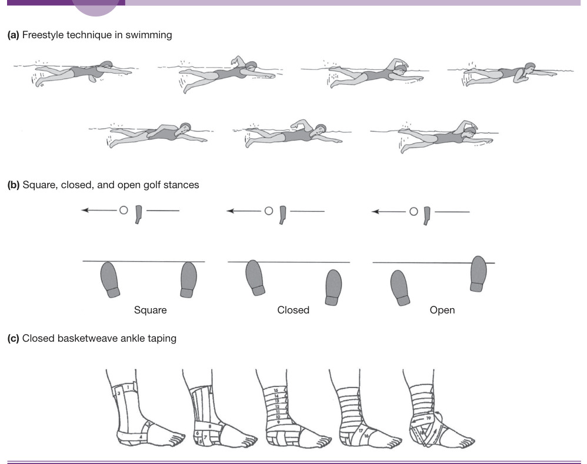
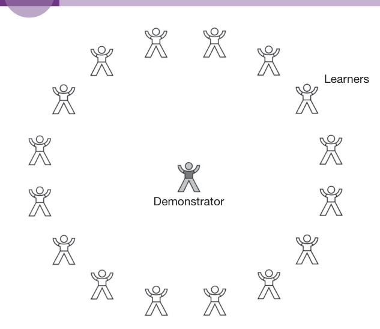
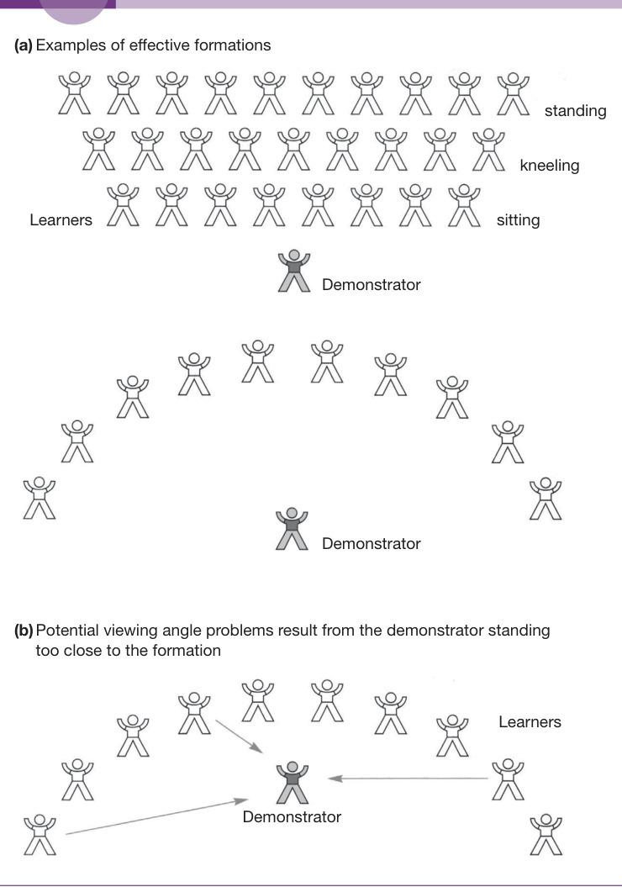
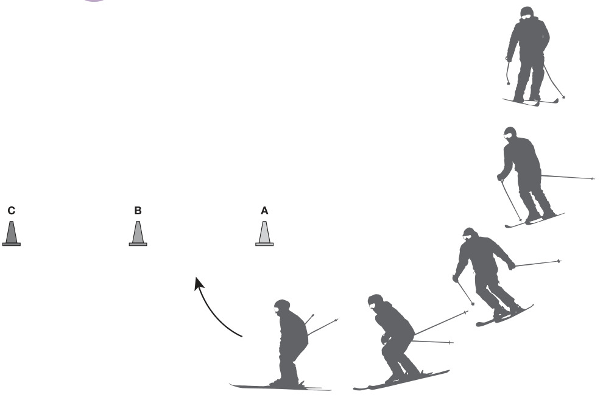
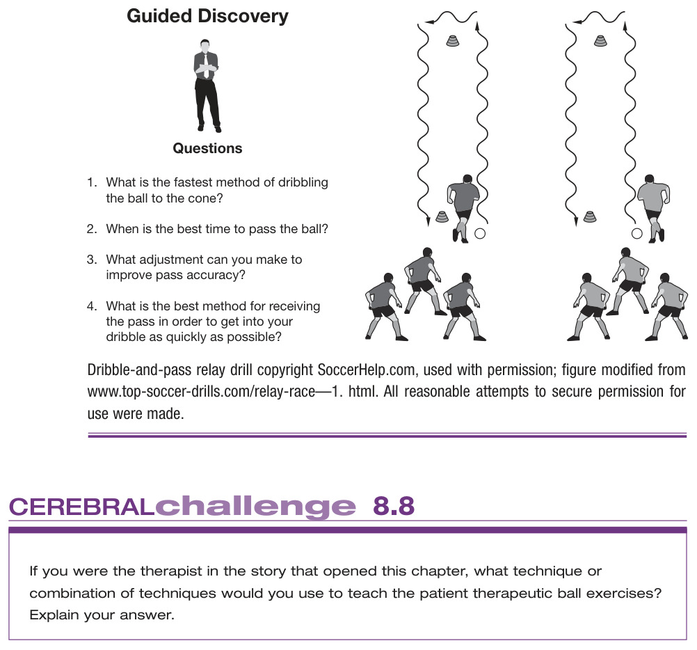

Chương 8 — Trình Bày Kỹ Năng
Một bệnh nhân 34 tuổi được chuyển đến vật lý trị liệu sau ca phẫu thuật sửa chữa dây chằng chéo trước (ACL) bị rách. Một thành phần của chương trình phục hồi chức năng được kê cho bệnh nhân này là huấn luyện ổn định lõi bằng bóng trị liệu. Vì bệnh nhân chưa quen với các bài tập dùng bóng trị liệu, nhà trị liệu sẽ phải giới thiệu chúng. Làm thế nào để làm điều này tốt nhất? Nhà trị liệu có nên dùng hướng dẫn bằng lời để giới thiệu các bài tập không? Có nên trình diễn mẫu chúng không? Hay trong trường hợp này, cách tiếp cận không trực tiếp (hands-off) lại tốt hơn? Cần cân nhắc những gì để bảo đảm các kỹ năng được trình bày hiệu quả nhất?
HƯỚNG DẪN TRỰC TIẾP SO VỚI KHÔNG TRỰC TIẾP
Khi quyết định chiến lược hướng dẫn nào sẽ dùng, người thực hành có hai cách tiếp cận chính để lựa chọn: (1) hướng dẫn trực tiếp (hands-on) và (2) hướng dẫn không trực tiếp (hands-off) (Williams & Hodges, 2005). Hướng dẫn trực tiếp, còn gọi là hướng dẫn áp đặt, là cách tiếp cận truyền thống, mang tính quy định, trong đó người thực hành cung cấp một khuôn mẫu vận động để người học bắt chước. Cách tiếp cận này được đặc trưng bởi việc dùng hướng dẫn bằng lời và trình diễn mẫu để truyền đạt thông tin cho người học, cũng như việc cung cấp phản hồi nhằm hướng dẫn sự phát triển kỹ năng. Ngược lại, cách tiếp cận không trực tiếp nhấn mạnh vai trò của người thực hành như một nhà thiết kế trải nghiệm học tập, người tạo ra cơ hội khám phá vận động thông qua việc xác định và thao tác có chủ đích các ràng buộc then chốt, nhằm hướng dẫn người học khám phá những giải pháp vận động tối ưu (Woods et al., 2020). Cả hai cách tiếp cận sẽ được thảo luận chi tiết trong chương này.
HƯỚNG DẪN TRỰC TIẾP HAY HƯỚNG DẪN ÁP ĐẶT
Trong cách tiếp cận hướng dẫn trực tiếp hay hướng dẫn áp đặt, khi được giới thiệu một động tác, kỹ năng hoặc nhiệm vụ mới, người học dùng thông tin được cung cấp trong các hướng dẫn và trình diễn mẫu để hình thành ý niệm về các yêu cầu của động tác. Ý niệm này giúp người học xây dựng một kế hoạch vận động đóng vai trò kim chỉ nam trong những lần thử đầu tiên với kỹ năng hay nhiệm vụ. Việc xây dựng một kế hoạch vận động chính xác phụ thuộc vào khả năng của người hướng dẫn trong việc phân tích một kỹ năng, xác định thông tin quan trọng cần truyền đạt, tổ chức thông tin đó và truyền đạt nó một cách hiệu quả (Rink, 2020). Trước khi bắt đầu hướng dẫn, người thực hành phải cân nhắc hai yếu tố sẽ ảnh hưởng trực tiếp đến việc học. Thứ nhất, điều then chốt là thu hút sự chú ý hoàn toàn của người học trước khi giới thiệu kỹ năng. Người thực hành có thể làm điều này bằng cách bảo đảm việc hướng dẫn diễn ra ở một địa điểm không có các yếu tố gây xao nhãng từ môi trường xung quanh. Cách bố trí hay đội hình nên cho phép tất cả người học nhìn và nghe người hướng dẫn rõ ràng; nếu hướng dẫn diễn ra ngoài trời, người học nên được xếp quay lưng lại phía mặt trời. Cuối cùng, người hướng dẫn nên yêu cầu người học đặt các thiết bị như bóng, tạ tay, ống cao su y tế và vợt ra xa khu vực hướng dẫn để loại bỏ mọi cám dỗ chơi với chúng. Việc thiếu chú ý, dù chỉ trong khoảnh khắc, cũng sẽ khiến người học bỏ lỡ thông tin quan trọng cần thiết cho sự phát triển kỹ năng thành công.
Yếu tố thứ hai cần cân nhắc là cách giới thiệu kỹ năng (hay còn gọi là dẫn nhập bài học [set induction] như thuật ngữ dùng trong lập kế hoạch tiết học giáo dục thể chất [Rink, 2020]). Sau khi người học đã ổn định, người hướng dẫn nên giới thiệu kỹ năng theo cách khơi gợi sự hứng thú. Như đã thảo luận trong Chương 7, người học có động lực tiếp nhận hướng dẫn tốt hơn. Sự nhiệt tình có sức lan tỏa! Người thực hành nên trình bày kỹ năng một cách sôi động và nhấn mạnh tầm quan trọng của nó.
Thử Thách Trí Não 8.1
Đối với một kỹ năng vận động mà bạn đang dạy hoặc sẽ dạy trong lĩnh vực chuyên môn của mình, hãy liệt kê các biến số có thể giành mất sự chú ý của người học trong lúc bạn đang hướng dẫn. Sau đó, hãy đề xuất những biện pháp bạn có thể áp dụng để giảm bớt những vấn đề về chú ý này. Ví dụ:
- Điện thoại di động của bệnh nhân đang rung.
- Học sinh đang quấy rầy một bạn cùng lớp.
Hướng Dẫn Bằng Lời
Bạn đã từng thử dạy một đứa trẻ cách buộc dây giày chưa? Có lẽ bạn đã không nghĩ nó khó đến vậy. Bạn đã buộc dây giày cho mình suốt nhiều năm trời. Thực tế, có lẽ bạn được coi là một chuyên gia trong việc buộc dây giày. Nhưng khả năng đưa ra hướng dẫn hiệu quả đòi hỏi nhiều hơn một sự hiểu biết thấu đáo về kỹ năng; bạn còn phải có khả năng truyền đạt tri thức đó cho người học. Đột nhiên, một kỹ năng tưởng chừng đơn giản như buộc dây giày trở nên vô cùng phức tạp khi bạn cố mô tả nó! Hãy kiểm tra hiệu quả hướng dẫn bằng lời của bạn bằng cách thực hiện các nhiệm vụ trong Hoạt động Khám phá 8.1.
Sự quen thuộc với kỹ năng được dạy là một lợi thế rõ ràng. Hiểu biết thấu đáo về kỹ năng giúp người thực hành xác định thông tin nào là quan trọng đối với người học. Tuy nhiên, chính sự quen thuộc đó lại có thể ảnh hưởng tiêu cực đến cách người hướng dẫn truyền đạt thông tin. Người thực hành có thể vô tình đưa ra quá nhiều mô tả, dùng thuật ngữ chuyên môn gây rối rắm, hoặc bỏ sót những chi tiết quan trọng. Kết quả là một người học bực bội và cuối cùng mất hứng thú. Hướng dẫn hiệu quả gửi đi những thông điệp rõ ràng đến người học. Điều này chỉ có thể đạt được khi những khác biệt cá nhân được cân nhắc trong thiết kế hướng dẫn.
Vai Trò Của Hướng Dẫn Nhiệm Vụ
Hướng dẫn nhiệm vụ có hai vai trò riêng biệt. Thứ nhất, chúng giới thiệu cho người học một kỹ năng mới. Ở vai trò này, hướng dẫn phải truyền đạt một ý niệm chung về mục tiêu của kỹ năng hay nhiệm vụ và làm cho người học nhận biết các đặc điểm kỹ thuật chính
QUAN NIỆM SAI PHỔ BIẾN
Chuyên gia luôn là người hướng dẫn hiệu quả nhất.
Hoạt Động Khám Phá 8.1
Hiệu Quả Của Hướng Dẫn Bằng Lời
Nhiệm Vụ 1: Buộc Dây Giày
Tìm một người bạn có giày đeo dây và sẵn sàng tạm thời quên cách buộc chúng. Chỉ dùng mô tả bằng lời, hãy đưa ra hướng dẫn để giúp bạn của bạn buộc dây giày.
Nhiệm Vụ 2: Tái Tạo Một Bản Vẽ
Đối với hoạt động này, bạn cần một người bạn, một tờ giấy và một cây bút chì. Người bạn của bạn nên ngồi quay lưng lại phía bạn, với giấy và bút chì trong tay. Nhiệm vụ của bạn là mô tả sơ đồ bên cạnh để người bạn có thể tái tạo lại nó. Trong suốt bài tập, bạn không được nhìn vào bản vẽ của người bạn, và người bạn cũng không được nhìn vào sơ đồ. Người bạn có thể đặt câu hỏi cho bạn nhưng không được dùng cử chỉ. Sau khi bạn mô tả xong và người bạn hoàn tất việc diễn giải những gì bạn mô tả, hãy so sánh hai bản vẽ. Thực hiện lại bài tập, dùng sơ đồ thứ hai được hiển thị (ở góc dưới bên phải) và đổi vai trò cho nhau. Lần này, người “vẽ” không được phép đặt bất kỳ câu hỏi nào. Hãy so sánh hai bản vẽ khi kết thúc.
Câu Hỏi
- Mức độ chính xác của bản sao mà người bạn tạo ra đối với sơ đồ bạn mô tả như thế nào? Những khác biệt đó có gợi ý gì cho bạn về cách bạn giao tiếp không?
- Người bạn của bạn đã đặt những loại câu hỏi làm rõ nào? Những câu hỏi đó có cung cấp cho bạn thông tin gì về cách bạn giao tiếp không?
- Bạn cảm thấy thế nào trong phần thứ hai, khi không được phép đặt câu hỏi? Bạn có thể khái quát hóa những thông tin đó sang các tình huống học tập khác không?
- Bạn có thể thay đổi những gì (nếu có) để cải thiện hiệu quả giao tiếp của mình trong tương lai?
hoặc các yếu tố then chốt (Griffey & Housner, 2007). Sau khi ý niệm chung về động tác đã được truyền đạt, tiêu điểm của hướng dẫn chuyển dịch; giờ đây, tinh chỉnh kỹ năng trở thành mục tiêu. Ở vai trò này, hướng dẫn nhằm phát triển trình độ kỹ năng của người học để họ có thể thực hiện kỹ năng trong các điều kiện tiêu chí.
Thử Thách Trí Não 8.2
Cho đến nay, chúng ta đã tập trung sự chú ý vào các đặc điểm của người học. Hiểu được người học giúp chúng ta đưa ra quyết định hiệu quả hơn về thiết kế hướng dẫn. Dựa trên hiểu biết của bạn về người học cho đến nay, bạn nghĩ những đặc điểm nào của hướng dẫn hiệu quả? Hãy ủng hộ ý tưởng của mình bằng cách giải thích cách mỗi đặc điểm sẽ đáp ứng được người học. Tiếp tục đọc phần về hướng dẫn bằng lời để xem bạn làm tốt đến đâu.
Ví dụ:
Đặc điểm: Hướng dẫn nên ngắn gọn.
Lý do: Dung lượng lưu trữ hạn chế của trí nhớ ngắn hạn.
Giới Thiệu Kỹ Năng
Như đã nêu trong phần trước, hướng dẫn ban đầu nên hướng sự chú ý của người học vào các yếu tố then chốt của kỹ năng vận động mới (Rink, 2020). Người mới bắt đầu thường gặp khó khăn trong việc phân biệt giữa các kích thích liên quan và không liên quan. Ví dụ, hoạt động tung bóng (juggling) được trình bày trong Chương 1 đã đưa ra rất ít hướng dẫn về cách tung bóng. Nếu bạn chưa từng thử tung bóng trước đây, có lẽ bạn đã có nhiều câu hỏi về cách thực hiện nhiệm vụ này, như “Tôi ném bóng cao đến mức nào?”, “Khi nào tôi buông tay?”, và “Tôi nên dùng nhịp điệu kiểu gì?”. Vì các yếu tố then chốt của nhiệm vụ tung bóng không được chỉ ra, có lẽ sau này bạn đã khám phá, qua thử và sai, rằng nhiều yếu tố bạn chọn chú ý thực ra không ảnh hưởng gì đến việc học nhiệm vụ. Bằng cách hướng sự chú ý của người học vào các yếu tố then chốt của kỹ năng, người hướng dẫn không để người học phải đoán xem nên tập trung vào cái gì — như đã xảy ra khi bạn học tung bóng.
Lượng Thông Tin
Hãy giữ lời giải thích ngắn gọn và đơn giản. Hướng dẫn dài, chi tiết thách thức khả năng chú ý và dung lượng lưu trữ của trí nhớ ngắn hạn của người học; như đã thảo luận trong Chương 5, những thứ này có dung lượng hạn chế. Sau khi khơi gợi hứng thú của người học bằng phần giới thiệu, hãy tận dụng điều đó. Người học sẽ háo hức tự mình thử kỹ năng. Ngoài ra, chỉ cung cấp các yếu tố then chốt cần thiết để học đúng kỹ năng bạn đang dạy. Chẳng hạn, giải thích về cách cầm gậy bóng chày là phù hợp cho buổi học đánh bóng đầu tiên, nhưng các kỹ thuật cụ thể để tạo ra cú xoay hông tối ưu nhằm sinh ra lực tối đa thì không. Những chi tiết đó nên được giải quyết sau này, khi người học đang cố tinh chỉnh mô hình vận động.
Thử Thách Trí Não 8.3
Hãy nhớ lại trải nghiệm tung bóng của bạn trong Hoạt động Khám phá 1.1. Bạn đã chọn chú ý đến những biến số nào nhưng sau đó bỏ đi vì phát hiện chúng không liên quan đến nhiệm vụ? Bạn đã phát hiện những biến số nào liên quan đến thực hiện thành công? Trải nghiệm tung bóng của bạn đã có thể khác đi như thế nào nếu bạn có một người hướng dẫn hiệu quả?
Ngôn Ngữ Chính Xác
Khi đưa ra hướng dẫn, hãy bảo đảm cung cấp cho người học đủ thông tin để truyền đạt khái niệm, đồng thời dùng thuật ngữ phù hợp với trình độ phát triển. Cụm từ “chụp gậy lên trên” (choke up on the bat) có thể quen thuộc với một số người học, nhưng với một người mới bắt đầu có ít kinh nghiệm thể thao thì nó có thể ít ý nghĩa. Một người đang học cách tập bài tập hộp rỗng (empty-can exercises) để phục hồi gân xoay cổ tay (rotator cuff) sẽ đáp ứng với chỉ dẫn “giơ tay lên” theo một cách, nhưng có thể đáp ứng khác đi nếu chỉ dẫn là “giơ tay lên đến điểm mà cánh tay trên song song với sàn nhà.”
Thiếu tính cụ thể có thể dẫn đến hiểu lầm. Trong một trường hợp, một huấn luyện viên đã dặn một tiền vệ trung học “ném nhanh hơn” sau khi nhận thấy cầu thủ này ném với cánh tay quá ngắn, dẫn đến tốc độ bóng kém. Tiếc thay, điều đó khiến cầu thủ dùng kỹ thuật ném ngắn tay còn hơn nữa; cách cầu thủ hiểu lời hướng dẫn là buông bóng sớm hơn, thay vì dùng toàn bộ tầm vận động để tạo thêm vận tốc. Hãy chọn lời từ cẩn thận. Bằng cách dùng thuật ngữ cụ thể, phù hợp với trình độ phát triển và khớp với trình độ kỹ năng của người học, bạn có thể tăng đáng kể khả năng hướng dẫn của mình được hiểu rõ.
Tiêu Điểm Nội Tại So Với Tiêu Điểm Ngoại Vi
Các cuộc phỏng vấn với vận động viên điền kinh và dã ngoại cho thấy 84,6 phần trăm huấn luyện viên đưa ra hướng dẫn liên quan đến các động tác cụ thể của cơ thể và chi (Porter, Wu, & Partridge, 2010). Trong một nghiên cứu tương tự, Durham et al. (2009) báo cáo rằng 95,5 phần trăm nhận xét phản hồi mà các nhà vật lý trị liệu đưa ra cho bệnh nhân đột quỵ trong quá trình điều trị liên quan đến các động tác của cơ thể (tiêu điểm nội tại). Halperin et al. (2016) cũng xác nhận xu hướng này khi phân tích các nhận xét phản hồi mà huấn luyện viên quyền anh đưa ra trong các trận đấu. Tuy nhiên, nghiên cứu cho thấy cách làm phổ biến này là hướng tiêu điểm chú ý vào bên trong, tức là vào các động tác của cơ thể, có thể không phải là cách tiếp cận hiệu quả nhất. Thay vào đó, lợi ích đã được chứng minh cho cả hiệu quả lẫn hiệu suất vận động khi áp dụng external focus of attention (tiêu điểm chú ý ngoại vi), tức là chú ý đến tác động của hành động của mình trên nhiều loại hoạt động (xem Wulf, 2013, để xem xét tổng quan toàn diện). Lý thuyết đứng sau hiện tượng này là giả thuyết hành động bị ràng buộc (constrained action hypothesis) (Wulf, McNevin, & Shea, 2001). Theo lý thuyết này, khi người học áp dụng tiêu điểm nội tại — như khi tập trung vào động tác của cánh tay
trong trò Cornhole chẳng hạn — họ cố ý kiểm soát hành động. Điều này làm gián đoạn dòng chảy tự nhiên của động tác. Việc thay vào đó chú ý đến quỹ đạo mong muốn của túi đậu (áp dụng tiêu điểm ngoại vi) được cho là thúc đẩy việc dùng các quá trình kiểm soát tự động hơn, nâng cao học tập và thực hiện. Duy trì tiêu điểm ngoại vi rõ ràng cũng được coi là thành phần then chốt của lý thuyết học vận động OPTIMAL (được giới thiệu trong Chương 7), vì người ta cho rằng nó đóng góp quan trọng vào sự ghép nối mục tiêu–hành động, hay hiệu quả mà mục tiêu định trước được chuyển hóa thành hành động (Wulf, Lewthwaite, et al., 2018).
GHI CHÚ NGHIÊN CỨU
Các cú tiếp đất cứng trong những môn thể thao như bóng rổ đã được liên hệ với chấn thương ACL không do va chạm và đã trở thành mục tiêu của các chương trình phòng ngừa. Việc huấn luyện vận động viên tránh tiếp đất cứng thường liên quan đến hướng dẫn bằng lời và phản hồi. Almonroeder et al. (2020) quan tâm đến ảnh hưởng của hướng dẫn bằng lời thúc đẩy tiêu điểm nội tại so với tiêu điểm ngoại vi lên cơ chế tiếp đất, cụ thể là độ cứng của cú tiếp đất. Mười sáu nữ vận động viên (bóng rổ, bóng đá, bóng chuyền) đã thực hiện tổng cộng 21 cú nhảy xuống từ một hộp cao 31 cm xuống một bàn đo lực. Trong bảy lần thử đầu tiên, người tham gia dùng kỹ thuật quen thuộc của mình để thiết lập đường cơ sở. Sau đó, họ thực hiện thêm hai loạt bảy lần thử, khi đó họ được đưa ra hướng dẫn bằng lời nhằm giảm độ cứng khi tiếp đất. Trong điều kiện tiêu điểm nội tại, người tham gia được nhắc tập trung vào việc cong đầu gối khi tiếp đất. Hướng dẫn trong điều kiện tiêu điểm ngoại vi là “tập trung vào việc tiếp đất nhẹ nhàng.” Dữ liệu lực và dữ liệu động học ba chiều đã được thu thập. Cả hai điều kiện hướng dẫn đều dẫn đến giảm độ cứng của chân khi tiếp đất, lực tiếp đất thấp hơn và gập hông cùng gập đầu gối lớn hơn so với thực hiện ở đường cơ sở. Tuy nhiên, hướng dẫn thúc đẩy tiêu điểm ngoại vi dẫn đến gập đầu gối lớn hơn nữa và độ cứng chân thấp hơn so với khi họ được cung cấp hướng dẫn thúc đẩy tiêu điểm nội tại. Nói cách khác, hướng dẫn bằng lời không chỉ có tác động ngay lập tức lên cơ chế tiếp đất, mà những hướng dẫn thúc đẩy tiêu điểm ngoại vi còn dẫn đến kiểu tiếp đất nhẹ nhàng hơn, mà các tác giả cho rằng có thể làm giảm nguy cơ chấn thương ACL.
Điều này có ý nghĩa gì đối với người thực hành? LỜI TỪ QUAN TRỌNG! Chỉ đơn giản đổi hướng dẫn từ “xoay vai xuống dốc” (tiêu điểm nội tại) sang “xoay khóa kéo xuống dốc” (tiêu điểm ngoại vi) cũng có thể ảnh hưởng đến thực hiện. Tương tự, hãy chỉ dẫn một cầu thủ tennis “kết thúc cú đánh với mặt dây vợt hướng về hàng rào bên” hoặc “tạo ra quả bóng . . .” thay vì hướng sự chú ý vào động tác của cánh tay (Regan, 2011). Cũng vậy, hãy hướng dẫn một bệnh nhân tưởng tượng việc đá bóng trong giai đoạn vung chân cuối của chu kỳ dáng đi thay vì tập trung sự chú ý vào cú chạm gót chân (McNevin, Wulf, & Carlson, 2000). Các ví dụ khác bao gồm hướng dẫn
một người chơi nhạc gõ tập trung vào chuyển động của dùi trống thay vì chuyển động của cổ tay, tập trung vào mục tiêu trong trò ném móng ngựa thay vì vào động tác của cánh tay, và bảo một bệnh nhân chú ý đến vị trí của vật cần di chuyển thay vì vào các động tác của bàn tay và ngón tay dùng để di chuyển vật đó (Wulf, 2007). Để xem thêm ví dụ về việc hướng tiêu điểm vào bên trong so với bên ngoài, xem Bảng 8.1. Lưu ý rằng mục đích của gợi ý là như nhau; gợi ý ngoại vi chỉ đơn giản hướng sự chú ý của người học đến một cái gì đó ngoài cơ thể, bao gồm thiết bị/dụng cụ và/hoặc tác động mong muốn.
Winkelman (2018) đề xuất một khung công tác dựa trên bằng chứng để tạo ra các gợi ý tiêu điểm ngoại vi, xem xét ba đặc điểm: khoảng cách, hướng và mô tả (cụ thể là ý định/cường độ). Về khoảng cách, tiêu điểm ở xa (xa hơn) nhìn chung tốt hơn tiêu điểm ở gần (gần hơn; ví dụ Banks et al., 2020). Tuy nhiên, Coker (2016) đã chứng minh một giới hạn của hiệu ứng này, khi phát hiện rằng một
BẢNG 8.1
Ví dụ về việc hướng tiêu điểm vào bên trong so với bên ngoài
- Kỹ năng — Tiêu điểm nội tại — Tiêu điểm ngoại vi
- Tiếp đất/bài tập plyometric — Uốn cong mắt cá chân nhiều hơn khi tiếp đất — Tiếp đất nhẹ nhàng hơn.
- Cú ném lacrosse qua đầu — Lắc cổ tay về phía mục tiêu — Ném rổ của gậy về phía mục tiêu.
- Cú putt trong golf — Vung tay theo chuyển động con lắc — Vung gậy theo chuyển động con lắc.
- Xuất phát từ bục — Duỗi thẳng chân hoàn toàn khi rời bục — Đẩy mạnh vào bục phía sau bạn.
- Bơi tự do — Kéo tay về sau — Kéo nước về sau.
- Nghiêng xương chậu — Co cơ bụng dưới để xoay xương chậu ra sau — Áp lưng xuống sàn cho phẳng.
Thử Thách Trí Não 8.4
Hãy điền vào bảng dưới đây bằng cách phát triển các gợi ý ngoại vi tương ứng với các gợi ý nội tại được cung cấp.
- Kỹ năng — Tiêu điểm nội tại — Tiêu điểm ngoại vi
- Cú giật tạ (Snatch, cử tạ) — Tập trung duỗi thẳng hai tay ở vị trí cao nhất — (hãy điền gợi ý ngoại vi).
- Với lấy một chiếc cốc — Cố vươn tay xa hơn — (hãy điền gợi ý ngoại vi).
- Chèo kayak — Tập trung kéo tay về sau — (hãy điền gợi ý ngoại vi).
- Kéo dài sải chân — Đẩy mạnh hơn bằng chân — (hãy điền gợi ý ngoại vi).
- Trượt tuyết — Cong đầu gối nhiều hơn — (hãy điền gợi ý ngoại vi).
khoảng cách đầy thử thách nhưng vẫn đạt được đã dẫn đến những màn nhảy xa tại chỗ tốt hơn. Yếu tố thứ hai cần cân nhắc là hướng. Một số nghiên cứu dùng cú nhảy xa đã cho thấy việc nhắc người thực hiện nhảy về phía một mục tiêu thay vì nhảy ra xa khỏi vạch xuất phát giúp cải thiện thành tích nhảy (ví dụ Porter et al., 2012, 2013). Cuối cùng, ý định và cường độ của mô tả thể hiện trong gợi ý ngoại vi cũng nên được cân nhắc thông qua việc dùng động từ hành động, từ bổ nghĩa và/hoặc ẩn dụ. “Bùng lên về phía trần nhà” trong cú nhảy cao hay “đá mạnh xuyên qua quả bóng” biểu thị cách kỹ năng nên được thực hiện. Ngoài ra, ẩn dụ làm rõ những đặc điểm liên quan đến mục tiêu của động tác đang được dạy bằng cách liên hệ chúng với một điều gì đó quen thuộc, như “bùng khỏi mặt đất như tên lửa lúc phóng” (Winkelman, 2018). Dùng khung này, một huấn luyện viên có thể bảo một vận động viên bơi “bùng lên” (mô tả) khỏi bục xuất phát hướng về (hướng) đầu kia của hồ bơi (khoảng cách). Trong vật lý trị liệu, một bệnh nhân có thể được nhắc cố giữ mép ngoài của bảng dao động cân bằng (khoảng cách) thông qua những điều chỉnh động tác tinh tế (mô tả), hoặc một khách hàng đang học động tác lăn phần thân trên như một bài tập chỉnh sửa có thể được hướng dẫn vươn về phía bức tường (khoảng cách và hướng) và làm điều đó bằng cách duỗi người dài tối đa (mô tả).
Cuối cùng, đã có ghi nhận một số ngoại lệ đối với lợi ích của tiêu điểm chú ý ngoại vi. Các nghiên cứu xem xét tiêu điểm chú ý trong thực hiện vận động của trẻ em và thanh thiếu niên đã cho kết quả trái ngược, trong đó một số ủng hộ việc dùng tiêu điểm ngoại vi (ví dụ Marchant et al., 2018), trong khi số khác chứng minh lợi ích của tiêu điểm nội tại (ví dụ Emanuel, Jarus, & Bart, 2008) hoặc không ghi nhận sự khác biệt giữa hai điều kiện (ví dụ Agar et al., 2016; Palmer et al., 2017). Các yếu tố được đề xuất có thể giải thích những mâu thuẫn này và cần nghiên cứu thêm gồm khác biệt cá nhân (Tse & van Ginneken, 2017; van Abswoude et al., 2018), cũng như các loại nhiệm vụ khác nhau và các giai đoạn học khác nhau (Agar et al., 2016). Dựa trên kết quả của mình, Gottwald et al. (2020) cũng đề xuất rằng việc tập trung vào cơ thể có thể có lợi cho những nhiệm vụ mang tính “cảm giác tự thân” hơn và ít phụ thuộc vào thông tin thị giác.
Kỹ Năng Đã Học Trước Đây
Theo các nguyên tắc của chuyển giao (được thảo luận trong Chương 7), khi một kỹ năng được giới thiệu, người học sẽ rút ra được ý nghĩa lớn hơn từ lời giải thích nếu nó liên quan đến một kinh nghiệm trước đó. Chẳng hạn, với một người có kinh nghiệm phong phú về bóng chuyền, việc hiểu vị trí cánh tay tại thời điểm chạm bóng trong cú phát bóng tennis sẽ dễ dàng hơn nếu người hướng dẫn so sánh nó với vị trí trong cú phát bóng chuyền. Mối liên hệ như vậy giúp người học đơn giản hóa kỹ năng, khái niệm hay chiến lược mới và tăng tốc độ tiếp thu nó.
Gợi Ý Bằng Lời
Nghiên cứu đã chỉ ra rằng việc dùng các gợi ý bằng lời tạo thuận lợi cho việc học (ví dụ Masser, 1993; Landin, 1994; Fronske, Blakemore, & Abendroth-Smith, 1997; Lorson &
Goodway, 2007; McNamee & Stefen, 2007). Gợi ý bằng lời là một từ hoặc cụm từ ngắn gọn tập trung sự chú ý của người học hoặc gợi ra một động tác hay trình tự động tác. Chẳng hạn, “Hai chân rộng bằng vai” hướng sự chú ý của người học vào một yếu tố then chốt của kỹ năng; “Bóng tự do” (free ball), dùng trong bóng chuyền, chuẩn bị cho hàng thủ, cho biết bóng sẽ được chuyền qua lưới vì không thể tấn công. Gợi ý “Bước” gợi ra một động tác, và gợi ý “Phải, phải, trái, lại gần nhau” gợi ra một trình tự động tác — chuỗi các lần chạm đất trong cú nhảy ba bước (triple jump).
Người học cũng phát triển và dùng các gợi ý để tự dẫn dắt mình thực hiện một hành động hay trình tự động tác. Kỹ thuật này được gọi là tự thoại (self-talk) hoặc diễn tập bằng lời, vì về cơ bản người học tự nói chuyện với mình trong lúc thực hiện nhiệm vụ. Nghĩ “khuỷu tay lên” để gợi ý cú vung tay cao trong kiểu bơi tự do là một ví dụ điển hình. Nhiều nghiên cứu đã chỉ ra rằng tự thoại có kế hoạch trong hướng dẫn có thể nâng cao tiếp thu kỹ năng (ví dụ Landin & Hebert, 1999; Perkos, Theodorakis, & Chroni, 2002; Hatzigeorgiadis, Theodorakis, & Zourbanos, 2004).
Bốn nguyên tắc hướng dẫn sau đây có thể giúp bạn xây dựng các gợi ý hiệu quả do người thực hành đưa ra và do chính người học tự tạo ra:
- Gợi ý phải ngắn gọn. Gợi ý tự thoại hiệu quả nhất khi chỉ chứa một hoặc hai từ (Ziegler, 1987). Với gợi ý do người thực hành đưa ra, tốt nhất cụm từ không nên dài quá bốn từ (Masser, 1993).
- Gợi ý phải chính xác. Trừ khi gợi ý thể hiện rõ các thành phần của kỹ năng, nếu không chúng sẽ không hiệu quả. Để xây dựng các gợi ý then chốt phản ánh chính xác các thành phần vận động quan trọng, bạn cần am hiểu kỹ năng đó.
- Số lượng gợi ý nên bị giới hạn. Quá nhiều gợi ý không chỉ làm tăng khả năng quên mà còn có thể can thiệp vào nhịp điệu tự nhiên của kỹ năng. Hãy nhớ rằng gợi ý được dùng để tập trung sự chú ý của người học. Việc chia một kỹ năng thành quá nhiều thành phần — dù nhằm đơn giản hóa nó cho người học — có thể ảnh hưởng tiêu cực đến thời điểm tổng thể của kỹ năng. Học lái xe số sàn là ví dụ điển hình. Nếu các gợi ý “đạp côn,” “chuyển số,” “nhả côn,” và “đạp ga” được xem là các bước riêng biệt, người học có thể bất ngờ khi xe bị chết máy hoặc vọt về phía trước!
- Nên lặp lại cùng một gợi ý. Sự lặp lại giúp người học hình thành liên kết mạnh mẽ giữa gợi ý và nhiệm vụ. Liên kết này, lần lượt, có tác động tích cực đến duy trì kỹ năng.
Tài nguyên trên web: Để xem thêm tài liệu giúp bạn xác định gợi ý cho hoạt động, hãy truy cập trang web đi kèm hoặc tham khảo Fronske và Heath (2015).
Gợi ý hoạt động: www.pecentral.org/lessonideas/cues/cuesmenu.asp
Thử Thách Trí Não 8.5
Thực hiện phân tích nhiệm vụ (xem Chương 1) sẽ giúp người thực hành xây dựng gợi ý bằng lời. Trước tiên, hãy chia kỹ năng thành các giai đoạn. Tiếp theo, xác định các yếu tố then chốt của mỗi giai đoạn. Cuối cùng, phát triển các gợi ý bằng lời dựa trên các yếu tố then chốt đó. Chẳng hạn, cú putt có thể được chia thành cách cầm gậy, cách đứng chuẩn bị và cú vung. Bảng dưới đây đưa ra ví dụ về các yếu tố then chốt của cú vung và các gợi ý tương ứng.
- Yếu tố then chốt — Gợi ý bằng lời
- Vai, khuỷu tay, bàn tay và gậy putt cùng vung qua lại như một khối thống nhất — Vung như con lắc.
- Gậy putt tăng tốc trong cú vung về trước — Vung xuyên qua quả bóng.
- Cú vung về sau và cú vung về trước nên đi cùng một quãng đường — Duy trì tỉ lệ vung.
Những từ gợi ý nào có thể dùng để gợi ra các động tác cho tư thế sẵn sàng đua, cú vung về trước và cú hồi phục trong môn đua xe lăn, như được mô tả trong Sổ tay Huấn luyện Điền kinh Special Olympics (2007, tr. 169)?
ĐUA XE LĂN
Tư Thế Sẵn Sàng Đua
Mô tả — Gợi ý
- Vận động viên phải ngồi trên đệm hoặc ghế của xe lăn.
- Nghiêng phần thân trên về phía trước để vai nằm trước hông.
- Giữ đầu gối và bàn chân lại gần nhau ở giữa xe.
- Nắm bánh xe hoặc thanh tay cầm ở vị trí 11 giờ; tức là ngay sau điểm cao nhất của bánh xe (vị trí 12 giờ), với ngón cái ở bên trong và các ngón tay ở bên ngoài.
- Giữ đầu hơi hướng về phía trước và nhìn về phía trước vài mét.
Cú Vung Về Trước Và Cú Hồi Phục
Mô tả — Gợi ý
- Từ tư thế sẵn sàng đua, đẩy bánh xe hoặc thanh tay cầm về phía trước từ vị trí 11 giờ đến vị trí 4 giờ, rồi buông tay khỏi bánh xe.
- Tiếp tục di chuyển tay và bàn tay theo chuyển động tròn, tức là đi qua các vị trí 6 giờ và 9 giờ, rồi hồi phục về vị trí 11 giờ.
- Giữ cơ thể và đầu yên trong cú vung và cú hồi phục.
Nguồn: Special Olympics Athletics Coaching Guide (2007). Truy cập tại http://digitalguides.specialolympics.org/athletics/?#/4/OnePage
GHI CHÚ NGHIÊN CỨU
Dùng 42 sinh viên đại học, McNamee và Steffen (2007) đã kiểm tra ảnh hưởng của các gợi ý hướng dẫn lên thực hiện leo núi đá. Sinh viên được chia thành hai nhóm, mỗi nhóm học và luyện tập các kỹ thuật leo núi đá cơ bản giống nhau trong 14 ngày trên một bức tường leo trong nhà cao 30 feet với 12 đường leo có độ khó khác nhau. Nhóm thứ nhất (22 sinh viên) nhận 12 gợi ý hướng dẫn, trong khi nhóm thứ hai (20 sinh viên) không nhận gợi ý nào trong quá trình hướng dẫn. Người tham gia được kiểm tra trước và sau về khả năng leo bằng phiên bản điều chỉnh của hệ thống chấm điểm của Liên đoàn Leo thể thao Hoa Kỳ. Kết quả cho thấy nhóm nhận gợi ý hướng dẫn thực hiện tốt hơn đáng kể so với nhóm đối chứng không nhận gợi ý nào. Những dữ liệu này ủng hộ vai trò của gợi ý bằng lời trong việc tạo thuận lợi cho tiếp thu kỹ năng.
Kiểm Tra Sự Hiểu Biết
Hướng dẫn chỉ gợi ra được đáp án mong muốn khi người học hiểu được chúng. Thay vì chờ người học cố thực hiện lời hướng dẫn của bạn để đánh giá mức độ hiểu nhiệm vụ hiện tại, hãy cho họ cơ hội đặt câu hỏi sau khi kỹ năng được trình bày. Yêu cầu người học nhắc lại các yếu tố then chốt của kỹ năng có thể giúp bạn đánh giá thêm mức độ hiểu hướng dẫn của họ. Với một lần kiểm tra nhanh sự hiểu biết, bạn sẽ tránh được việc phải tập hợp lại người học để lặp lại hay làm rõ hướng dẫn.
Thử Thách Trí Não 8.6
- Hãy liệt kê những hành vi hoặc cử chỉ gợi ý rằng người học có thể chưa hiểu hướng dẫn đã được đưa ra.
- Hãy suy đoán xem việc hỏi người học có câu hỏi nào hay yêu cầu họ nhắc lại các yếu tố then chốt của kỹ năng sẽ hiệu quả hơn khi kiểm tra sự hiểu biết. Hãy nêu lý do cho câu trả lời của bạn.
Trình Diễn Mẫu
Hãy xem lại trải nghiệm dạy một người cách buộc dây giày. Có lẽ không lâu trước khi bạn nhận ra rằng việc mô tả bằng lời cách buộc dây giày một cách có ý nghĩa đòi hỏi rất nhiều chi tiết, cũng như một lời giải thích khá dài dòng — và cả hai đều không giúp ích gì cho việc học. Thực tế, phản ứng đầu tiên của bạn khi đối diện với thử thách này nhiều khả năng là chỉ cho người học cách làm. Theo câu tục ngữ một bức tranh đáng giá ngàn lời, trình diễn mẫu
thường là phương pháp hướng dẫn được ưu tiên, và nghiên cứu ủng hộ tính hiệu quả của nó trong việc tạo thuận lợi cho học vận động (xem Ste-Marie, Lelievre, & St. Germain, 2020, để xem xét tổng quan).
Nơ-ron gương: https://www.youtube.com/watch?v=pGYKcqzG_7M
Các Thuyết Về Học Qua Quan Sát
Trình diễn mẫu, còn gọi là mô hình hóa hay học qua quan sát, dựa trên khả năng của người học trong việc tiếp thu thông tin bằng cách quan sát một người khác, hay mô hình, thực hiện động tác. Về mặt thần kinh, một loại tế bào thần kinh chuyên biệt mới được phát hiện gọi là nơ-ron gương được cho là giải thích khả năng này. Nơ-ron gương là các tế bào thần kinh bắn tín hiệu khi chúng ta thực hiện một hành động và khi chúng ta xem người khác thực hiện cùng hành động đó. Nói cách khác, nơ-ron gương dường như là cơ chế thần kinh mà qua đó học qua quan sát diễn ra (Buccino & Riggio, 2006; Buccino et al., 2004). Bạn có thể tìm hiểu thêm về nơ-ron gương và sự khám phá ra chúng bằng cách xem video trên trang web đi kèm.
Dù nơ-ron gương đã được chứng minh là hoạt động trong học qua quan sát, cách mô hình hóa tạo thuận lợi cho tiếp thu kỹ năng vẫn là một câu hỏi quan trọng. Hai thuyết đưa ra lời giải thích.
Thuyết Nhận Thức Xã Hội Về Học Qua Quan Sát
Thuyết nhận thức xã hội về học qua quan sát (Bandura, 1986) cho rằng khi một người học quan sát người khác mô phỏng một động tác, người học xử lý thông tin do mô hình truyền đạt và chuyển hóa nó thành một biểu diễn trí nhớ nhận thức về hoạt động đó. Biểu diễn nhận thức này, được hình thành thông qua mã hóa biểu tượng và diễn tập nhận thức, không chỉ đóng vai trò dẫn dắt những lần thử động tác tiếp theo của người học mà còn cung cấp một khung tham chiếu để phát hiện và sửa lỗi.
Cách Giải Thích Động Về Mô Hình Hóa
Cách giải thích động về mô hình hóa (Scully & Newell, 1985) đưa ra một góc nhìn khác về cách học qua quan sát tạo thuận lợi cho tiếp thu kỹ năng. Theo góc nhìn này, thông tin then chốt mà người học tiếp thu từ một lần trình diễn mẫu là các đặc điểm tương đối của mô hình vận động — hay nói cách khác, là kiểu phối hợp của các chi so với nhau. Bằng cách nhận trực tiếp thông tin này, người học có thể phối hợp các động tác của cơ thể để tái tạo chuyển động tương đối đã quan sát được. Hơn nữa, chuyển động phối hợp được điều chỉnh tỉ lệ theo các thông số cá nhân. Do đó, nhu cầu tạo ra một biểu diễn nhận thức về kỹ năng như Bandura đã đề xuất là điều bị tranh cãi.
Các nghiên cứu cũng gợi ý rằng loại thông tin thu được từ một lần trình diễn mẫu có thể phụ thuộc vào độ tuổi. Newell (1985) đề xuất rằng việc xem trình diễn mẫu trong các giai đoạn đầu của học tập có nhiều khả năng tạo thuận lợi cho việc tiếp thu các kiểu phối hợp được mô phỏng hơn là đạt được kết quả vận động, chẳng hạn như đưa bóng chính xác vào một
mục tiêu hay nhảy qua một vật, vì người mới bắt đầu cần tập trung vào việc tiếp thu các động lực học vận động chưa quen (Ashford, Davids, & Bennett, 2007). Tuy nhiên, các nghiên cứu đã chỉ ra rằng điều này không nhất thiết đúng với trẻ em. Chẳng hạn, Labiadh, Ramanantsoa và Golomer (2010) nhận thấy rằng khi trẻ được yêu cầu bắt chước một số nhiệm vụ nhảy do người lớn mô phỏng, các em tái tạo được mục tiêu của người trình diễn nhưng không nhất thiết dùng cùng kiểu phối hợp khi nhảy. Theo Ashford et al. (2007), vì sự phát triển thể chất và nhận thức–vận động của trẻ khác với người lớn, các em ít có khả năng sở hữu năng lực nền tảng để thực hiện các động tác cần thiết nhằm bắt chước hình thức đã quan sát, và thay vào đó có xu hướng tập trung vào mục tiêu của động tác.
Thiết Kế Trình Diễn Mẫu Hiệu Quả
Nếu một lần trình diễn mẫu muốn truyền đạt thông tin giúp người học trong những lần thử động tác sau này, người thực hành phải đưa ra năm quyết định về thiết kế của nó:
- Nên trình diễn cái gì?
- Ai nên trình diễn?
- Nên tổ chức lần trình diễn như thế nào?
- Nên trình diễn khi nào?
- Nên trình diễn với tần suất nào?
Nội Dung: Nên Trình Diễn Cái Gì?
Rõ ràng lần trình diễn nên tập trung vào kỹ năng được dạy, nhưng một số cân nhắc bổ sung cũng quan trọng. Vì vậy, nội dung cụ thể của lần trình diễn là quyết định đầu tiên người thực hành phải đưa ra.
Phối Hợp So Với Kiểm Soát
Khi các lần trình diễn mẫu nhấn mạnh các biến số kiểm soát những kiểu vận động đã thành thạo, chẳng hạn như tốc độ và lực, học qua quan sát được thấy là không hiệu quả hơn các hình thức hướng dẫn khác (Magill, 1998; Williams & Hodges, 2005). Thay vào đó, người học dường như lợi ích nhất từ những lần trình diễn tập trung vào một kiểu phối hợp mới, chẳng hạn như kỹ thuật giữ bóng lacrosse trong lòng gậy hay cách đi bằng nạng (Magill & Schoenfelder-Zohdi, 1996). Các nghiên cứu cho thấy rằng, khi ở giai đoạn đầu của tiếp thu, việc quan sát một mô hình dẫn đến việc tiếp nhận các đặc điểm hình thức tương tự như chuyển động tương đối hay sự phối hợp của mô hình (xem Ashford, Bennett, & Davids, 2006, để xem xét tổng quan).
Tuy nhiên, như đã nêu ở trên, điều này không phải lúc nào cũng đúng với trẻ em — các em có xu hướng tập trung vào kết quả vận động. Do đó, Ashford et al. (2007) đề xuất rằng, dù cần thêm nghiên cứu để hiểu sự khác biệt cá nhân trong học qua quan sát, người quan sát là trẻ em và người lớn “có thể cần sự nhấn mạnh khác nhau giữa kết quả vận động và động lực học vận động” (tr. 556).
Toàn Bộ So Với Một Phần
Vì mục đích của lần trình diễn ban đầu là cung cấp cho người học một ý niệm chung về các yêu cầu của động tác, kỹ năng nên được thực hiện trọn vẹn, như nó sẽ diễn ra trong một tình huống thi đấu hay tình huống tiêu chí. Việc thấy toàn bộ kỹ năng không chỉ cho người học ý niệm về động tác và kết quả mong đợi của nó; mà còn cho thấy mối liên hệ giữa các bộ phận cấu thành (Hodges & Franks, 2004). Nội dung của các lần trình diễn tiếp theo phụ thuộc vào độ phức tạp của kỹ năng và mức độ dễ dàng khi chia nó thành các thành phần. Chẳng hạn, sau lần trình diễn kiểu bơi ếch, một huấn luyện viên bơi có thể muốn hướng sự chú ý của người học vào cách thực hiện cú đạp roi và trình diễn riêng cú đạp đó.
Thời Gian Thực So Với Chuyển Động Chậm
Người hướng dẫn thường dùng chuyển động chậm để hướng sự chú ý của người học vào một khía cạnh cụ thể của kỹ năng. Tuy nhiên, việc sử dụng này nên hạn chế, vì xem kỹ năng theo thời gian thực là quan trọng để phát triển một khung tham chiếu cho kỹ năng (Williams, 1986), và nó cho phép người học cảm nhận được nhịp điệu tự nhiên của động tác. Vì vậy, lần trình diễn đầu tiên của kỹ năng nên diễn ra theo thời gian thực; các lần trình diễn sau có thể thực hiện ở chế độ chậm để nhấn mạnh các khái niệm cụ thể; và khi đã hiểu, có thể trình diễn lại ở tốc độ ban đầu.
Đặc Điểm Của Mô Hình: Ai Nên Trình Diễn?
Có nhiều lựa chọn về việc chọn mô hình, bao gồm việc trình diễn nên được thực hiện trực tiếp hay qua video. Theo một bài tổng quan của Ste-Marie et al. (2020), cả hai hình thức đều hiệu quả như nhau, cho phép người thực hành lựa chọn hình thức phù hợp nhất với tình huống cụ thể của mình. Các đặc điểm khác của mô hình có thể ảnh hưởng đến hiệu quả của lần trình diễn sẽ được thảo luận trong phần sau.
Mô Hình Chuyên Gia So Với Mô Hình Đang Học
Người học tạo ra một biểu diễn nhận thức, hay “bản thiết kế tri giác” (perceptual blueprint) (Lee, Swinnen, & Serrien, 1994), về một kỹ năng dựa trên việc quan sát một lần trình diễn. Vì biểu diễn này đóng vai trò dẫn dắt các lần thử động tác tiếp theo của người học cũng như việc phát hiện và sửa lỗi, nên hợp lý là mô hình nên thực hiện kỹ năng đúng cách. Người học thấy kỹ năng được thực hiện đúng bao nhiêu lần, bản thiết kế đó càng vững chắc. Bản thiết kế càng vững chắc, khả năng tái tạo kỹ năng càng lớn. Chính ý niệm này khiến một số người thực hành có thể tin rằng trình diễn mẫu hiệu quả nhất khi do các mô hình có trình độ cao hay chuyên gia thực hiện.
Tuy nhiên, bằng chứng ngày càng nhiều thách thức việc chỉ dùng mô hình chuyên gia. Đã có những lợi ích được ghi nhận khi dùng mô hình đang học — một mô hình chưa thành thạo đang học kỹ năng đó. Các yếu tố then chốt của kỹ thuật này là xem một người học khác luyện tập kỹ năng, nghe
QUAN NIỆM SAI PHỔ BIẾN
Để một người quan sát học được một động tác, lần trình diễn phải được thực hiện đúng.
phản hồi của người hướng dẫn, rồi xem người đó cố sửa các lỗi đã được xác định (Hebert & Landin, 1994). Chiến lược này đã được ủng hộ qua các nhiệm vụ thời gian đơn giản (McCullagh & Caird, 1990), trò chơi video phức tạp (Pollock & Lee, 1992), kiểu phối hợp hai tay (Hirose et al., 2004), xếp cốc (Hebert, 2019), và các kỹ năng thể thao như tennis (Hebert & Landin, 1994) và cử tạ (McCullagh & Meyer, 1997). Hebert (2019) cũng ghi nhận lợi thế rõ rệt khi quan sát hai mô hình đang học thay vì một đối với thực hiện ban đầu của nhiệm vụ, gợi ý rằng những người học xem hai mô hình trước khi luyện tập có thể đã thấy nhiều chiến lược thực hiện nhiệm vụ đa dạng hơn. So sánh giữa trình diễn của chuyên gia và mô hình đang học cho thấy sự khác biệt đáng kể về mức độ người học tham gia tích cực vào quá trình học. Xem một mô hình chuyên gia có thể khuyến khích người học bắt chước động tác thay vì khám phá động tác. Mặt khác, sau khi quan sát một mô hình đang học, người học phải tự tạo ra giải pháp vận động của riêng mình. Điều này khuyến khích tự khám phá thông qua việc dò tìm nhiều giải pháp nhiệm vụ có thể có, đồng thời tăng nỗ lực nhận thức của người học — một quan điểm được ủng hộ bởi lời tự thuật của người tham gia trong nghiên cứu của Hebert (2019), những người đã hoàn thành một cuộc khảo sát sau khi tiếp thu và được hỏi họ đã học được gì khi xem bạn bè luyện tập nhiệm vụ. Người học cũng có thể dễ đồng cảm hơn với một mô hình đang học vì cảm thấy tương đồng — một khái niệm sẽ được khám phá trong phần sắp tới. Chuyên gia và mô hình đang học được so sánh trong Bảng 8.2.
BẢNG 8.2
Đặc điểm của mô hình chuyên gia so với trình diễn của mô hình đang học
- Mô hình chuyên gia — Đặc điểm mô hình: trình độ thành thạo cao; địa vị cao. Nội dung trình diễn: kỹ năng được thực hiện đúng; gợi ý bằng lời đi kèm trình diễn; sự chú ý của người học hướng vào tính đúng đắn của thực hiện. Kết quả: người quan sát tham gia thụ động; khuyến khích bắt chước động tác.
- Mô hình đang học — Đặc điểm mô hình: trình độ thành thạo cao hơn người quan sát một chút; địa vị tương tự người quan sát. Nội dung trình diễn: thực hiện có thể vừa đúng vừa sai; gợi ý bằng lời cộng với phản hồi của người hướng dẫn đi kèm trình diễn; sự chú ý của người học hướng vào cả mặt đúng lẫn sai của thực hiện. Kết quả: người quan sát tham gia tích cực; khuyến khích khám phá động tác.
Nguồn: Theo Darden (1997).
Quan Sát Hỗn Hợp
Rohbanfard và Proteau (2011) đã đặt câu hỏi liệu việc quan sát kết hợp các mô hình thành thạo và mới bắt đầu có tận dụng được lợi ích của từng loại so với việc chỉ xem một mô hình chuyên gia hay một mô hình đang học. Kết quả của họ, cũng như của Andrieux và Proteau (2013,
2014) và Domuracki et al. (2015), ủng hộ việc dùng chiến lược quan sát hỗn hợp này. Theo Rohbanfard và Proteau (2011), quan sát hỗn hợp thúc đẩy học tập tốt hơn vì việc xem người chuyên gia cung cấp cho người học một bản thiết kế của nhiệm vụ, trong khi người mới bắt đầu trình diễn những lỗi có thể xảy ra. Theo kết quả của Andrieux và Proteau (2014), điều này giúp người học phát triển cơ chế phát hiện lỗi tốt hơn.
Một hình thức quan sát hỗn hợp khác được dùng trong giáo dục thể chất, thể thao và phục hồi chức năng là kết hợp tự quan sát với thực hiện của chuyên gia thông qua phát lại video. Nhờ công nghệ chia đôi màn hình dễ dàng tiếp cận với người thực hành qua các ứng dụng như Dartfish và Hudl Technique, người học có thể đồng thời xem thực hiện của mình ở một nửa màn hình và một mô hình thành thạo ở nửa kia. Lợi ích học tập của việc quan sát kết hợp bản thân và mô hình thành thạo đã được ghi nhận trong chèo thuyền (Anderson, Campbell, & Ste-Marie, 2015), đường chuyền bóng chuyền (Barzouka, Sotiropoulos, & Kioumourtzoglou, 2015) và thể dục dụng cụ (Baudry, Leroy, & Chollet, 2006; Robertson, St. Germain, & Ste-Marie, 2019). Ưu điểm của chiến lược quan sát hỗn hợp này là nó cung cấp thông tin giúp người học hiểu cần làm gì để thực hiện kỹ năng đang được học hay tinh chỉnh (Robertson et al., 2019). Điều này đặc biệt đúng khi người thực hành so sánh hai lần thực hiện và hướng sự chú ý của người học vào những khía cạnh của kỹ năng quan trọng cho việc cải thiện thực hiện (Baudry, Leroy, & Chollet, 2006). Ngoài ra, Andrieux và Proteau (2016) nhận thấy việc học được tối ưu khi người quan sát mới bắt đầu được cung cấp thông tin về chất lượng của lần trình diễn
GHI CHÚ NGHIÊN CỨU
Xét đến việc phát lại video về màn thực hiện vừa thực hiện của bản thân được dùng rộng rãi trong thể thao, Robertson et al. (2019) quan tâm đến việc liệu xem mình cùng với quan sát một người thực hiện thành thạo có vượt trội hơn so với chỉ tự quan sát trong việc tiếp thu hai kỹ năng thể dục dụng cụ hay không. Hai mươi mốt nữ vận động viên thể dục dụng cụ đã tham gia nghiên cứu trong năm buổi luyện tập. Một kỹ năng được học bằng cách xen kẽ luyện tập thực tế với video tự quan sát, trong khi kỹ năng thể dục dụng cụ kia theo cùng chế độ luyện tập thực tế, nhưng sau tự quan sát là video về màn thực hiện của một mô hình thành thạo. Kết quả cho thấy cả hai điều kiện đều thúc đẩy học giai đoạn đầu tương tự nhau. Tuy nhiên, điểm thực hiện thể chất vượt trội hơn đã được ghi nhận cho điều kiện kết hợp tự quan sát/mô hình thành thạo khi quá trình luyện tập tiến triển. Ngoài ra, sự kết hợp tự quan sát/mô hình thành thạo dẫn đến khả năng nhận diện lỗi tốt hơn so với chỉ tự quan sát. Các tác giả suy đoán rằng can thiệp kết hợp này giúp người thực hiện tận dụng việc nhận thông tin tiêu biểu từ màn trình diễn của chuyên gia, đồng thời vẫn cho phép tự đánh giá tích cực.
trước hay sau khi thực hiện khi dùng các mô hình hỗn hợp. Họ đề xuất rằng chiến lược này có thể giúp người học chuẩn bị tham gia vào quá trình bắt chước hoặc phát hiện lỗi, tùy thuộc vào loại mô hình mà họ sắp quan sát — thành thạo hay đang học.
Tương Đồng Giữa Mô Hình Và Người Quan Sát
Những biến số như địa vị, độ tuổi, giới tính và mức độ tương đồng với người quan sát của mô hình ảnh hưởng thế nào đến mức độ một kiểu vận động hay kỹ năng cuối cùng được học? Trong một số nghiên cứu, khi người tham gia xem các mô hình mà họ cảm thấy giống mình, họ thực hiện tốt hơn so với khi xem các mô hình mà họ cảm thấy khác mình (Gould & Weiss, 1981; McCullagh, 1987). Hơn nữa, khi người tham gia xem một mô hình không quen thuộc, trình độ kỹ năng thay vì địa vị của mô hình có thể có ý nghĩa hơn đối với cảm nhận tương đồng của người quan sát (Lirgg & Feltz, 1991).
Những kết quả này có thể được giải thích bằng niềm tin tự hiệu quả (self-efficacy) gia tăng (Gould & Weiss, 1981; McAuley, 1985; Schunk & Hanson, 1985). Về cơ bản, khi người quan sát thấy một mô hình tương tự thực hiện kỹ năng thành công, họ tin mạnh mẽ hơn rằng mình cũng có thể tái tạo kỹ năng đó thành công. Do đó, sự cải thiện thực hiện có thể là kết quả của việc tăng chú ý hay động lực ở người quan sát. Cần thận trọng khi giải thích những kết quả này. Lưu ý rằng sự gia tăng được tìm thấy ở thực hiện; cho đến nay, bằng chứng trực tiếp ủng hộ ảnh hưởng của đặc điểm mô hình lên việc học còn rất ít.
Các Phương Tiện Thay Thế
Như đã thảo luận ở trên, người thực hành không bị giới hạn ở việc dùng mô hình trực tiếp để trình bày các khái niệm và động tác. Với những tiến bộ công nghệ, người thực hành không còn phải phụ thuộc vào các sản phẩm thương mại mà có thể tự tạo video theo ý mình. Video cho phép người học xem đi xem lại các khía cạnh cụ thể của một kỹ năng từ nhiều góc độ (một số có thể khó thấy trong lần trình diễn trực tiếp) và ở các tốc độ khác nhau; chúng cũng có thể được dùng để trình bày các pha chơi, luật lệ, chiến lược và hướng dẫn an toàn cho các trò chơi và môn thể thao.
Một cách hiệu quả khác để trình bày các khái niệm, kỹ thuật và động tác là bổ sung cho mô hình trực tiếp hoặc video bằng bản vẽ hay ảnh tĩnh. Những hình ảnh như trong Hình 8.1 cho phép người hướng dẫn cho thấy mối quan hệ giữa người thực hiện và dụng cụ hay đối thủ, cô lập các vị trí then chốt, và làm nổi bật những khía cạnh khó thấy của kỹ năng hay đội hình.
Cuối cùng, Shea, Wulf, et al. (2001) chứng minh rằng mô hình hóa bằng thính giác nâng cao việc học các đặc điểm về thời gian tương đối của một nhiệm vụ. Nói cách khác, làm nổi bật nhịp điệu hay tempo bên trong của một kỹ năng bằng âm thanh có thể tạo thuận lợi cho tiếp thu kỹ năng. Năm bước cuối trong phần chạy đà ném lao chẳng hạn, thường có nhịp: vừa, vừa, dài, ngắn, ngắn. Một mô hình trực tiếp có thể tái hiện kiểu bước chân cho người quan sát, nhưng vỗ tay theo nhịp để cô lập nhịp điệu có thể giúp hiểu rõ hơn, đặc biệt với người học thiên về thính giác. Dùng máy đếm nhịp trong môn múa là một ví dụ khác. Hơn nữa, nhiều

Hình 8.1: Những hình ảnh có thể được dùng để truyền đạt các khía cạnh cụ thể của một động tác hay kỹ thuật — (a) kỹ thuật bơi tự do; (b) các tư thế đứng golf vuông góc, khép và mở; (c) cách băng mắt cá chân kiểu đan rổ khép.
kỹ năng thể thao lại tạo ra âm thanh đi kèm. Chẳng hạn, âm thanh sẽ khác khi một quả bóng chày mềm được bắt vào lõm của găng tay so với khi bắt vào lòng bàn tay. Việc trình diễn các âm thanh đi kèm có thể cung cấp cho người học một khung tham chiếu về tính đúng đắn của động tác mình.
Cơ Chế Của Trình Diễn Mẫu Hiệu Quả: Nên Tổ Chức Trình Diễn Như Thế Nào?
Việc xác định cách tổ chức lần trình diễn là quyết định thứ ba người thực hành phải đưa ra. Người hướng dẫn phải bảo đảm tất cả người học đều có góc nhìn tốt và tập trung vào các yếu tố then chốt của lần trình diễn. Các nguyên tắc hướng dẫn sau đây sẽ giúp bạn tổ chức một lần trình diễn hiệu quả.
Dùng Đội Hình Phù Hợp
Tất cả người học phải nhìn và nghe lần trình diễn rõ ràng. Một số đội hình rất phù hợp với mục tiêu này, trong khi số khác lại gây vấn đề. Một ví dụ về đội hình gây vấn đề là vòng tròn với người trình diễn ở giữa, như trong Hình 8.2. Rõ ràng,

Hình 8.2: Đội hình tròn — gồm người trình diễn và những người học.
sẽ khó khăn hơn cho một người học đứng bên trái của người trình diễn thuận tay phải khi theo dõi các yếu tố then chốt của kỹ năng. Tương tự, một người học đứng phía sau người trình diễn sẽ không nghe rõ gợi ý và hướng dẫn. Một vấn đề khác của đội hình tròn là tất cả người học không thể nhìn trình diễn từ cùng một góc độ. Một số sẽ nhìn từ phía trước, số khác từ phía sau, và số khác nữa từ bên hông.
Các đội hình thay thế được thiết kế để giải quyết những lo ngại này được minh họa trong Hình 8.3 (a). Người trình diễn không nên đứng quá gần người học, nếu không những người ở hai đầu đội hình sẽ có góc nhìn khác với những người ở giữa, như minh họa trong Hình 8.3 (b).
Trình diễn một kỹ năng từ nhiều góc nhìn khác nhau sẽ nâng cao hiểu biết của người học về các yêu cầu của động tác. Các góc nhìn khác nhau làm nổi bật các khía cạnh khác nhau của kỹ năng. Chẳng hạn, một bệnh nhân đang học dùng dụng cụ hỗ trợ đi lại (walker) có thể thấy toàn bộ kiểu vận động từ phía trước, trong khi góc nhìn bên sẽ cung cấp thông tin về vị trí của dụng cụ so với cơ thể trước khi bước. Tương tự, góc nhìn bên của động tác lướt trong cú đẩy tạ (shot put) cho phép người học tập trung vào chuyển động của chân, trong khi góc nhìn từ phía sau làm nổi bật vị trí của vai. Nhìn trình diễn từ nhiều góc độ sẽ cho một bức tranh đầy đủ hơn về kỹ năng.
Đôi khi nhìn một kỹ năng từ phía trước lại gây vấn đề. Động tác grapevine trong lớp aerobics là ví dụ điển hình. Nếu một mô hình trình diễn kỹ năng này khi quay mặt về phía nhóm, người học phải đảo ngược những gì vừa quan sát để thực hiện các bước bằng cùng chi (phải hay trái), điều có thể gây rối rắm khá nhiều. Trong tình huống này, nhìn mô hình từ phía sau sẽ giúp

Hình 8.3: Các đội hình thay thế — (a) ví dụ về các đội hình hiệu quả (người học đứng, quỳ, ngồi; người trình diễn); (b) vấn đề góc nhìn tiềm ẩn do người trình diễn đứng quá gần đội hình.
người học bắt chước động tác hơn. Ngoài ra, người hướng dẫn có thể trình bày một hình ảnh gương bằng cách quay mặt về phía nhóm nhưng thực hiện kỹ năng theo cùng hướng mà nhóm đang di chuyển.
Giải Thích Trình Diễn Sẽ Diễn Ra Như Thế Nào Và Cần Xem Gì
Đã được nhấn mạnh suốt chương này rằng người học phải hướng sự chú ý vào các đặc điểm liên quan của động tác, nếu không lời hướng dẫn có thể

Hình 8.4: Góc nhìn từ phía trước cung cấp thông tin về thời điểm của động tác.
Hình 8.5: Góc nhìn bên cung cấp trình diễn cụ thể hơn về vị trí của dụng cụ hỗ trợ đi lại.
trở nên vô giá trị. Vì mục đích này, tránh dùng các cụm từ “như thế này” hay “như thế kia” khi trình diễn. Những cụm từ này không đủ cụ thể để hướng sự chú ý của người học. Thay vào đó, hãy nói cho người học biết trình diễn sẽ diễn ra như thế nào và cụ thể cần xem gì. Chẳng hạn, lần trình diễn đầu tiên của một kỹ năng mới nên bao quát toàn bộ kỹ năng, như nó sẽ được thực hiện trong tình huống thi đấu hay tình huống tiêu chí. Vì ý định ở đây là cho người học một ý niệm chung về các yêu cầu của động tác, hướng dẫn phù hợp chỉ đơn giản là hãy xem toàn bộ kỹ năng. Trong các lần trình diễn sau của toàn bộ kỹ năng hay một phần kỹ năng, nên báo trước cho người học để hướng chú ý vào các khía cạnh cụ thể của động tác, chẳng hạn như xem các ngón chân được duỗi ra thế nào trong cú đạp chân nhịp sóng (flutter kick) (Weiss & Klint, 1987; McCullagh, Steihl, & Weiss, 1990; Zetou et al., 2002; Janelle, Champenoy, Coombes, & Mousseau, 2003). Tuy nhiên, theo Ashford et al. (2007), cần cẩn trọng khi hướng sự chú ý của trẻ vào các gợi ý liên quan hay những khía cạnh cụ thể của hành vi vận động được quan sát. Nếu trẻ không có các động lực học nội tại cần thiết, việc hướng chú ý của trẻ vào việc tái tạo động lực học vận động có thể gây bất lợi cho động lực
và sự tự tin của các em, vì các em sẽ gặp khó khăn trong việc đáp ứng mục tiêu phụ cụ thể này. (tr. 556)
Nói cách khác, các thực hành tốt nhất phải phù hợp với trình độ phát triển.
Tránh Cho Thấy Kết Quả Của Hành Động
Dù lần trình diễn đầu tiên của một kỹ năng mới nên bao quát toàn bộ kỹ năng, như nó sẽ được thực hiện trong tình huống thi đấu hay tình huống tiêu chí, các lần trình bày sau nên được thiết kế để tránh cho thấy kết quả của hành động. Nói cách khác, hãy thiết kế lần trình diễn sao cho kết quả bị loại bỏ. Với tư cách con người, chúng ta là những sinh vật tò mò. Chúng ta muốn biết quả bóng có vào lưới không, cú ném lao bay xa đến đâu, và có bắt được bóng hay không. Tiếc thay, sự tò mò này thường làm sao lãng tiêu điểm của ta khỏi các khía cạnh then chốt của động tác đã tạo ra kết quả đó (quá trình). Việc loại bỏ kết quả — chẳng hạn ném một cây lao đã chỉnh sửa vào lưới — khiến người học ít có khả năng theo dõi dụng cụ và có nhiều khả năng tập trung vào các yếu tố then chốt của động tác.
Trình Diễn Cho Cả Người Thuận Tay Phải Và Tay Trái
Khi trình diễn trước một nhóm, hãy lưu ý thành phần của nhóm về chi thuận. Nếu tất cả người học đều thuận tay phải, có thể không cần trình diễn cú phát bóng tennis bằng tay trái. Tuy nhiên, nếu nhóm có cả hai xu hướng dùng chi, hãy trình diễn kỹ năng theo cả hai cách. Việc chỉ bảo người học thuận tay trái đơn giản là đổi mọi điều đã nói sang phía bên kia làm tăng độ phức tạp của nhiệm vụ.
GHI CHÚ NGHIÊN CỨU
Janelle et al. (2003) kiểm tra hiệu quả của các điều kiện gợi ý khác nhau trong học qua quan sát đối với kết quả và hình thức của cú sút bóng đá bằng lòng bàn chân vào mục tiêu. Sáu mươi người tham gia được ngẫu nhiên chia vào một trong sáu nhóm: học khám phá, hướng dẫn bằng lời, mô hình video với gợi ý thị giác, mô hình video với gợi ý bằng lời, mô hình video với cả gợi ý thị giác và bằng lời, và chỉ mô hình video. Mỗi người thực hiện tám loạt, mỗi loạt mười lần thử. Loạt 1 và 2 là giai đoạn luyện tập, khi không có thao tác nào được áp dụng. Các loạt 3 đến 6 được coi là giai đoạn tiếp thu, vì tất cả nhóm đều nhận phương thức hướng dẫn tương ứng (thao tác được áp dụng). Cuối cùng, 24 giờ sau giai đoạn tiếp thu, người tham gia hoàn thành các loạt 7 và 8, giai đoạn duy trì, khi không có thao tác nào được đưa ra. Kết quả cho thấy những người tiếp xúc với mô hình hóa bằng video có gợi ý thị giác và bằng lời thực hiện ít lỗi hơn và có kiểu vận động tinh chỉnh hơn so với những người dùng các phương thức mô hình hóa hay chiến lược học khác. Những kết quả này càng ủng hộ quan điểm rằng việc cung cấp gợi ý trong học qua quan sát tạo thuận lợi cho tiếp thu kỹ năng.
Phân Bổ Và Tần Suất: Nên Trình Diễn Khi Nào Và Bao Nhiêu Lần?
Việc dùng một lần trình diễn để bổ sung cho hướng dẫn ban đầu khi giới thiệu một kỹ năng mới có vẻ tự nhiên. Nhưng người thực hành cũng phải quyết định có nên xen kẽ các lần trình diễn bổ sung trong suốt buổi luyện tập hay không, và nếu có thì bao nhiêu lần? Nghiên cứu khám phá câu hỏi này gợi ý rằng, để học hình thức vận động, một lịch trình kết hợp việc xem trình diễn vài lần trước khi luyện tập với các lần quan sát xen kẽ trong giai đoạn đầu của quá trình học (các lần trình diễn được xen kẽ trong suốt thời gian luyện tập) vượt trội hơn so với chỉ xem trước khi luyện tập hay chỉ xen kẽ (Ong & Hodges, 2012).
Để xác định tần suất trình diễn, hãy cân nhắc trình độ kỹ năng của người học và độ phức tạp của nhiệm vụ. Nhìn chung, người học có kinh nghiệm cần ít lần trình diễn hơn người chưa có kinh nghiệm (Wrisberg, 2007). Các lần trình diễn bổ sung có thể cần thiết khi kỹ năng trở nên phức tạp hơn. Tần suất quan sát cũng có thể được điều chỉnh cho phù hợp với nhu cầu cá nhân bằng cách cho người học tự chọn thời điểm xem trình diễn. Nghiên cứu cho thấy những người học có thể tự chọn tần suất xem mô hình (tức là xem trình diễn khi họ muốn) tiếp thu hình thức vận động tốt như những người xem mô hình trước mỗi lần luyện tập (Wrisberg & Pein, 2002; Wulf et al., 2005). Trong trường hợp này, khi được quyền kiểm soát tần suất xem mô hình, họ chủ yếu chọn xem trong các giai đoạn đầu của học tập, gợi ý rằng các lần trình diễn giúp cung cấp cho người học “một ý niệm chung về kiểu vận động hoặc có thể là để điều chỉnh động tác của họ sau một lần thực hiện không chính xác” (Wrisberg & Pein, 2002, tr. 794). Bằng chứng bổ sung ủng hộ việc cho người học quyền kiểm soát tần suất xem đã được ghi nhận khi học cú sút tĩnh trong bóng rổ (Aiken, Fairbrother, & Post, 2012), cú chip trong golf (Post et al., 2016), các kỹ năng múa ballet (Lemos et al., 2017; St. Germain, Lelievre, & Ste-Marie, 2019), kỹ năng bơi (Marques & Corrêa, 2016) và kỹ năng nhảy lò xo (Ste-Marie et al., 2016). Hãy xem Bảng 8.3 để có danh sách tóm tắt các cân nhắc về trình diễn, và hoàn thành Hoạt động Khám phá 8.2 để đánh giá hiệu quả trình bày kỹ năng.
BẢNG 8.3
Các cân nhắc về trình diễn
- Cái gì (WHAT): Kiểu phối hợp mới; toàn bộ so với một phần; thời gian thực so với chuyển động chậm.
- Ai (WHO): Mô hình chuyên gia so với mô hình đang học; sự tương đồng giữa người quan sát và mô hình.
- Như thế nào (HOW): Video, ảnh tĩnh, âm thanh; đội hình và góc nhìn; chi thuận; hướng của chuyển động; tránh các lựa chọn về kết quả.
- Khi nào (WHEN): Giới thiệu kỹ năng; xen kẽ trong suốt luyện tập.
- Bao nhiêu lần (HOW OFTEN): Lịch trình áp đặt so với tự điều chỉnh.
Hoạt Động Khám Phá 8.2
Đánh Giá Hiệu Quả Trình Bày Kỹ Năng
Hoạt Động 1
Dùng thông tin trình bày trong chương này, hãy thiết kế một bảng kiểm đánh giá nhằm xác định hiệu quả trình bày kỹ năng.
Ví dụ:
- Người thực hành có dùng một tín hiệu rõ ràng để tập hợp người học lại không?
- Người thực hành có trình diễn kỹ năng cho cả người học thuận tay phải lẫn thuận tay trái không?
Hoạt Động 2
Hãy quan sát một giáo viên, huấn luyện viên hoặc nhà trị liệu đang trình bày một kỹ năng mới. Dùng bảng kiểm bạn thiết kế ở Hoạt động 1, hãy đánh giá hiệu quả của lần trình bày kỹ năng đó.
Hoạt Động 3
Bây giờ hãy tự quay video trong lúc bạn trình bày một kỹ năng mới. Xem lại video và dùng bảng kiểm từ Hoạt động 1 để đánh giá thực hiện của bạn. Bạn có thể cải thiện hiệu quả trình diễn mẫu của mình như thế nào?
HƯỚNG DẪN KHÔNG TRỰC TIẾP
Trong phương pháp hướng dẫn này, việc học được thúc đẩy thông qua khám phá có hướng dẫn và tự khám phá (Williams & Hodges, 2005). Thay vì áp đặt cách đạt được mục tiêu hành động, người thực hành định hình các kiểu vận động thông qua việc thao tác có chủ đích các ràng buộc then chốt (Davids et al., 2008). Việc học diễn ra từ khám phá các khả năng hành động và thích ứng với các ràng buộc được áp đặt lên người học trong lúc luyện tập. Như đã thảo luận trong Chương 7, các hoạt động học tập phải có thiết kế mang tính đại diện và bảo đảm sự ghép nối chặt chẽ giữa thông tin và vận động (xem Chow et al., 2019). Chẳng hạn, rê bóng quanh các cọc cố định không gợi ra cùng quá trình khám phá như rê bóng quanh các hậu vệ đang di chuyển.
Dù vai trò của người thực hành chuyển sang người thiết kế trải nghiệm học tập thay vì người áp đặt, sẽ là sai lầm nếu cho rằng người thực hành chỉ đơn giản giao nhiệm vụ cho người học hoàn thành. Người thực hành phải tham gia tích cực vào quá trình học, cung cấp các mức độ hướng dẫn khác nhau và điều chỉnh ràng buộc dựa trên kết quả quan sát được nhằm tăng cơ hội thích ứng cho người học (Storey & Butler, 2013). Hơn nữa, việc phát triển các hoạt động hướng dẫn hiệu quả đầy thách thức, vì cần có mức độ nhận thức cao về sự tương tác giữa người học, nhiệm vụ và môi trường mà nhiệm vụ được thực hiện, để nhạy bén với những khả năng hành động mà một nhiệm vụ có thể mang lại cho người học — từ đó có thể gợi ra sự thay đổi thực hiện mong muốn.
Giao Nhiệm Vụ, Đừng Giao Giải Pháp
Upton (2015) đưa ra lời khuyên xuất sắc để áp dụng cách tiếp cận không trực tiếp: “Hãy giao một nhiệm vụ (‘vấn đề’), chứ không phải động tác (‘giải pháp’).” Nói cách khác, hãy cung cấp cho người học mục tiêu cần đạt trong khi giảm thiểu các chi tiết cụ thể về cách làm, nhằm thúc đẩy khám phá các giải pháp vận động có thể có. Ông đưa thêm ví dụ về việc vượt qua một hậu vệ trong bóng đá (mục tiêu nhiệm vụ). Thay vì quy định một động tác hay kỹ thuật cụ thể, chỉ cần nói với cầu thủ rằng họ có thể dùng bất kỳ hành động nào họ muốn để đạt mục tiêu. Người học có thể được dẫn dắt thêm thông qua hướng dẫn khám phá tập trung vào kết quả vận động thay vì hình thức vận động, và thông qua việc dùng ẩn dụ.
Thao Tác Các Ràng Buộc Của Nhiệm Vụ Và/Hoặc Luyện Tập
Có nhiều biến số nhiệm vụ và luyện tập có thể được thao tác để định hình kiểu vận động và hành vi, bao gồm áp đặt thay đổi luật lệ, điều chỉnh thiết bị, thay đổi kích thước khu vực chơi, thao tác các yếu tố tình huống trong lúc thực hiện, và thay đổi tiêu chí nhiệm vụ (Williams, 2003). Chẳng hạn, một huấn luyện viên bóng đá có thể thay đổi kích thước khu vực chơi bằng cách thu nhỏ không gian luyện tập cho một bài rê bóng “nhằm cải thiện khả năng kiểm soát bóng của người học” (Araújo et al., 2004, tr. 413); trong bóng chuyền, có thể áp đặt luật giới hạn khu vực mà bóng được phát, chuyền hay đánh tới, từ đó buộc cầu thủ phải điều chỉnh động tác để đạt mục tiêu đã định. Việc thay đổi vị trí tương đối của các cầu thủ hoặc số lượng cầu thủ tấn công so với phòng thủ (thao tác yếu tố tình huống) sẽ buộc người học phải đưa ra lựa chọn chiến thuật và giúp họ hiểu các khái niệm như tìm khoảng trống hay đọc một kiểu chơi (Passos et al., 2010). Việc điều chỉnh quy mô thiết bị, chẳng hạn chỉnh chiều dài mái chèo trong môn canoeing hay chiều dài ván trượt trong môn trượt tuyết, có thể làm thay đổi động tác của người học (Brymer & Renshaw, 2010), và việc một bệnh nhân dùng các kiểu nắm khác nhau có thể được thúc đẩy bằng cách thao tác các đặc điểm của vật như trọng lượng, đường kính, kích thước và độ cứng. Những thay đổi thích ứng trong thực hiện kỹ năng cũng có thể được tạo ra bằng cách thay đổi các tiêu chí nhiệm vụ khác nhau. Trong khi thực hiện bài tập giạng hông nằm nghiêng, hãy yêu cầu khách hàng hay bệnh nhân nâng một túi đậu đặt ở mắt cá chân để dạy tư thế cơ thể đúng. Để sửa cú gập đầu gối vào trong khi squat, hãy đặt một dải kháng lực nhỏ ngay dưới đầu gối, buộc vận động viên phải kháng lại lực kéo vào trong của nó. Để khuyến khích học sinh buông bóng gần mặt đất hơn khi học cú lăn dưới tay, Colombo-Dougovito và Block (2016) đề xuất cho học sinh tập trung vào việc lăn bóng dưới một chiếc ghế đặt giữa các em và mục tiêu. Cuối cùng, như được minh họa trong video tại www.youtube.com/watch?v=R02GLDfl0Ws, các huấn luyện viên trượt tuyết giỏi đã dùng các đặc điểm tự nhiên của địa hình để định hình kỹ thuật trượt tuyết/trượt ván của người học trong nhiều năm. Khái niệm này gần đây đã được chính thức hóa thành Chương trình Học Dựa Trên Địa Hình (Terrain Based Learning Program™), được các chương trình học trượt tuyết/trượt ván tại nhiều khu nghỉ dưỡng áp dụng. Chương trình này cố ý định hình lớp tuyết để tạo ra các đặc điểm kiểm soát tốc độ và tư thế của người học, giảm sợ hãi và lo âu, và tạo ra sự
GHI CHÚ NGHIÊN CỨU
Một phương pháp hiệu quả dùng trong thể thao thanh thiếu niên để đơn giản hóa kỹ năng là điều chỉnh thiết bị. Nimmins, Strafford và Stone (2019) quan tâm đến việc liệu lợi ích tương tự có đạt được ở người lớn chưa thành thạo hay không. Để kiểm tra câu hỏi này, họ nghiên cứu ảnh hưởng của việc thay đổi khối lượng puck ở các cầu thủ khúc côn cầu trên băng người lớn thành thạo (N = 25) và kém thành thạo (N = 25) (tuổi trung bình = 21). Người tham gia thực hiện hai nhiệm vụ với ba loại puck khác nhau: nhẹ (133 g), quy chuẩn (170 g) và nặng (283 g). Nhiệm vụ thứ nhất là hoàn thành một đường chướng ngại đại diện cho tình huống thi đấu. Cầu thủ xuất phát từ vị trí đứng yên, điều khiển puck qua các cú rẽ rộng, một đoạn hẹp và nhanh, và một hình số 8 quanh các cọc, rồi đi ngược lại đường chạy về điểm xuất phát. Thời gian hoàn thành và số lỗi kiểm soát puck được ghi lại. Trong nhiệm vụ thứ hai, các cầu thủ thực hiện cú sút vào thủ môn sau khi trượt nhanh nhất có thể từ đường giữa vào vùng sút. Độ chính xác cú sút và tỉ lệ ghi bàn được ghi lại. Khối lượng puck ảnh hưởng đến thực hiện của cầu thủ thành thạo và kém thành thạo theo những cách khác nhau. Cầu thủ kém thành thạo hoàn thành đường chướng ngại nhanh hơn với ít lỗi hơn, cũng như cải thiện độ chính xác cú sút và tỉ lệ ghi bàn khi dùng puck nhẹ. Ở chiều ngược lại, thực hiện của cầu thủ thành thạo bị ảnh hưởng tiêu cực khi dùng cả puck nhẹ lẫn puck nặng. Nói cách khác, các ràng buộc do puck nhẹ mang lại giúp người chơi chưa thành thạo dễ thực hiện các nhiệm vụ xử lý gậy hơn, nhưng lại cản trở thực hiện của những cầu thủ thành thạo vốn quen dùng puck quy chuẩn.
thay đổi thực hiện hiệu quả. Để tìm hiểu thêm, hãy xem video tại www.youtube.com/watch?v=wvMkEd_r3Uw. Hãy xem Hình 8.6 để có thêm ví dụ về các biến số nhiệm vụ và luyện tập có thể được thao tác để định hình kiểu vận động.
Hình 8.6: Ví dụ về các biến số nhiệm vụ và luyện tập có thể được thao tác để định hình kiểu vận động.
- Quy tắc (Rules): Số lượng người chơi; hệ thống ghi điểm; số lần chạm bóng; phân phối bóng.
- Thiết bị (Equipment): Kích thước; trọng lượng; chiều dài; đường kính cán cầm; kết cấu bề mặt.
- Tiêu chí nhiệm vụ (Task criteria): Khoảng cách; tốc độ; độ chính xác; lực; kích thước khung thành hay mục tiêu; các kỹ năng vận động dùng để chơi.
- Yếu tố tình huống (Situational factors): Vị trí tương đối của người chơi; số người tấn công so với phòng thủ; địa hình, bố cục và/hoặc điều kiện của một đường chạy.
- Khu vực chơi (Playing area): Kích thước khu vực chơi; hình dạng; vị trí của khung hay khu vực sút.
Thử Thách Trí Não 8.7
- Hãy dự đoán những điều chỉnh sau đây đối với một trò Ultimate Frisbee sẽ ảnh hưởng thế nào đến lối chơi của (a) đội tấn công và (b) đội phòng thủ:
- Thu nhỏ kích thước sân chơi.
- Tăng kích thước sân chơi.
- Thu nhỏ kích thước khu vực ghi điểm.
- Tăng kích thước khu vực ghi điểm.
- Một sinh viên giáo dục thể chất đang đi thực tập quyết định dùng một hoạt động khởi động gọi là “thợ xây và máy ủi” (builders and bulldozers). Với hoạt động này, nhiều cọc gỗ bowling được đặt ngẫu nhiên khắp một khu vực chơi được chỉ định. Tiếp theo, học sinh được chia thành hai nhóm. Một nhóm, “máy ủi,” chạy quanh và lật đổ càng nhiều “tòa nhà” (cọc gỗ) càng tốt. Những “người thợ xây” phải dựng lại các tòa nhà đã đổ bằng cách đặt các cọc gỗ đứng dậy. Khi hoạt động tiến triển, sinh viên thực tập nhận ra người thợ xây không theo kịp máy ủi và hầu hết các cọc đều đổ vào bất kỳ thời điểm nào. Những người thợ xây nhanh chóng mất động lực và bỏ cuộc vì nhiệm vụ của họ có vẻ không thể hoàn thành. Hãy gợi ý cách sinh viên thực tập có thể điều chỉnh các ràng buộc của nhiệm vụ để cải thiện hoạt động này.
- Bạn đang thực tập trong lĩnh vực sức mạnh và thể lực, làm việc với các vận động viên về phát triển tốc độ từ tư thế xuất phát ba điểm. Bạn đọc trên mạng về một bài tập thang nhịp (stick drill/acceleration ladder) có thể phù hợp với các vận động viên của mình. Theo trang web, năm–bảy que (băng dán, cọc, v.v.) được xếp thành hình thang, với dấu mốc ban đầu cách vạch xuất phát 3 feet và các “nấc” còn lại được giãn dần thêm 6 inches (xem hình dưới đây: vạch xuất phát, 3 ft, 3.5 ft, 4 ft, 4.5 ft, 5 ft). Mục tiêu của vận động viên là đặt chân khớp với từng nấc khi đang tăng tốc. Bạn có áp dụng bài tập này không? Hãy giải thích đầy đủ lý do có hay không.
- Bạn có một bệnh nhân bị khó chịu ở vai và cổ. Trong quá trình đánh giá, bạn phát hiện ra rằng gần đây cô ấy đã chuyển sang dùng bàn đứng khi làm việc và dùng máy tính xách tay. Điều này có thể góp phần gây đau như thế nào? Những ràng buộc nào có thể được thao tác để giảm bớt một phần khó chịu của cô ấy?
Thử Thách
Một hình thức khác của hướng dẫn không trực tiếp là dùng các thử thách. Chẳng hạn, trong môn trượt tuyết, người học có thể được thử thách xem họ tạo ra nhiều hay ít bụi tuyết nhất. Tương tự, họ có thể được thử thách phun tuyết lên dốc, xuống dốc hoặc về phía bên cạnh đường trượt để luyện thời điểm gờ trượt (edge engagement) ăn vào. Một vận động viên bơi có thể được thử thách giữ một con vịt cao su trên trán khi bơi ngửa để học tư thế đầu đúng. Ngoài ra, một bệnh nhân có thể được thử thách di chuyển các vật khác nhau đến nhiều vị trí và độ cao trong luyện tập với và nắm.
Hướng dẫn cũng có thể được cá nhân hóa bằng cách cho người học quyền chọn mức độ khó của thử thách. Nghiên cứu đã chỉ ra rằng tự kiểm soát độ khó của nhiệm vụ (self-control of task difficulty) mang lại mức độ tiến bộ học tập lớn hơn so với việc áp đặt mức độ khó (Andrieux et al., 2012; Andrieux, Boutin, & Thon, 2016). Hơn nữa, Andrieux et al. (2012) cho thấy quyết định về độ khó của nhiệm vụ phụ thuộc vào thực hiện của chính người đó trong lần thử trước. Nói cách khác, những người tham gia tự kiểm soát “liên tục điều chỉnh mức độ khó của nhiệm vụ trong suốt quá trình luyện tập, dựa trên năng lực vận động của chính mình, để đạt được điều kiện phù hợp nhằm tối ưu hóa tiếp thu và học kỹ năng” (Andrieux et al., 2016, tr. 57). Quan điểm này được Jalalvand et al. (2019) ủng hộ, khi họ cho người tham gia chọn các khoảng cách định sẵn khi học một nhiệm vụ putt golf, và phù hợp với các dự đoán của khung điểm thử thách (challenge point framework) rằng tiếp thu kỹ năng được tạo thuận lợi khi người học được thử thách ở mức tối ưu (Guadagnoli & Lee, 2004).

Hình 8.7: Minh họa thử thách cú rẽ “J” với tự kiểm soát độ khó của nhiệm vụ (các cọc A, B, C).
Một ví dụ về chiến lược này được minh họa trong Hình 8.7. Trong thử thách này, người học đang luyện cú rẽ “J” chọn chiếc cọc mà họ sẽ rẽ quanh. Ban đầu họ có thể chọn cọc C, dễ nhất trong ba cọc, nhưng khi thành thạo hơn, họ có thể điều chỉnh mức độ khó và cuối cùng chọn rẽ sát hơn quanh cọc A.
Thử Thách Trí Não 8.8
Nếu bạn là nhà trị liệu trong câu chuyện mở đầu chương này, bạn sẽ dùng kỹ thuật hay sự kết hợp kỹ thuật nào để dạy bệnh nhân các bài tập dùng bóng trị liệu? Hãy giải thích câu trả lời của bạn.

Hình 8.8: Minh họa bài tập tiếp sức rê bóng và chuyền bóng.
Câu hỏi — Khám phá có hướng dẫn
- Cách nhanh nhất để rê bóng đến cọc là gì?
- Thời điểm tốt nhất để chuyền bóng là khi nào?
- Bạn có thể điều chỉnh gì để cải thiện độ chính xác của đường chuyền?
- Cách tốt nhất để nhận bóng nhằm bắt đầu rê bóng nhanh nhất là gì?
Bài tập tiếp sức rê bóng và chuyền bóng bản quyền SoccerHelp.com, được sử dụng với sự cho phép; hình được điều chỉnh từ www.top-soccer-drills.com/relay-race—1.html. Mọi nỗ lực hợp lý đã được thực hiện để xin phép sử dụng.
Khám Phá Có Hướng Dẫn
Trong khám phá có hướng dẫn, người thực hành đặt một chuỗi câu hỏi, mỗi câu gợi ra một đáp án đúng duy nhất mà người học cần khám phá (Mosston & Ashworth, 1994). Quá trình từng bước này dẫn đến việc khám phá cuối cùng khái niệm hay nguyên tắc mong đợi. Để áp dụng kỹ thuật này, người thực hành phải thiết kế một loạt câu hỏi hay gợi ý về động tác hay khái niệm mới. Câu hỏi đầu tiên được đưa ra, người học được cơ hội trả lời, và người thực hành hoặc củng cố đáp án hoặc định hướng lại người học. Khi đáp án đúng đã được khám phá, người thực hành đặt câu hỏi tiếp theo trong chuỗi. Chẳng hạn, khi giới thiệu kỹ năng rê bóng đá, người học có thể được hỏi: “Mục tiêu của các hậu vệ là gì?” Khi người học xác định mục tiêu của hậu vệ là cướp bóng, các câu hỏi tiếp theo dẫn người học đến việc khám phá cách đá bóng nhẹ và bằng lòng bàn chân thay vì bằng mũi chân. Dần dần, người học sẽ học được kỹ thuật và cũng hiểu được lý do kỹ thuật đó được dùng. Một ví dụ khác được minh họa trong Hình 8.8. Trong cuộc đua tiếp sức này, mỗi cầu thủ phải rê bóng nhanh nhất có thể đến cọc đầu tiên, rẽ, rồi chuyền cho cầu thủ tiếp theo trong hàng. Thông qua một loạt câu hỏi, người học nâng cao hiểu biết về nhiều kỹ năng, gồm rê bóng tốc độ, đá và chuyền bóng khi đang chạy, và khái niệm rằng người nhận bóng nên di chuyển về phía bóng (Soccer Drills That Are Practice Games, 2016). Để tìm hiểu thêm về khám phá có hướng dẫn và cách dùng nó để dạy các khái niệm học vận động, xem Rukavina và Jeansonne (2009).
ĐƯA VÀO THỰC HÀNH
Tình Huống Học Tập: Học Đường Chuyền Gián Tiếp Trong Khúc Côn Cầu
Thay vì cố giải thích cần tìm gì trong các tình huống khác nhau để thực hiện đường chuyền gián tiếp hiệu quả, Jennifer chọn dùng cách tiếp cận hướng dẫn không trực tiếp. Cô muốn tạo ra các thử thách trong lối chơi bằng các trận đấu nhỏ 3 đấu 3 trên nửa sân để rèn luyện kỹ năng chuyền gián tiếp.
Kiểm Tra Kiến Thức Của Bạn
Những điều chỉnh hay điều kiện nào trong trò chơi Jennifer có thể áp đặt để giúp cầu thủ học khi nào nên dùng và đặt đường chuyền gián tiếp vào đâu? Ngoài ra, khám phá có hướng dẫn có thể được dùng như thế nào để giúp cầu thủ cải thiện kỹ năng dự báo? Hãy so sánh câu trả lời của bạn với câu trả lời mẫu tại www.routledge.com/cw/coker.
NHÌN VỀ PHÍA TRƯỚC
Khi trình bày một kỹ năng mới, mục tiêu ban đầu của người hướng dẫn là truyền đạt thông tin người học cần để hình thành hiểu biết cơ bản về các yêu cầu của động tác và
xây dựng một kế hoạch vận động ban đầu. Điều này có thể thực hiện thông qua hướng dẫn trực tiếp (hands-on) hoặc các cách tiếp cận khám phá vận động (hands-off). Khi điều đó đã hoàn tất, tiêu điểm chuyển sang tinh chỉnh kỹ năng. Thông qua các cơ hội luyện tập được thiết kế cẩn thận, có thể đạt được mức tối đa về trình độ thành thạo kỹ năng. Những vấn đề liên quan đến thiết kế luyện tập là nội dung trọng tâm của chương sau.
ĐIỂM NHẤN MẠNH
Sau khi đọc chương này, bạn nên biết:
- Hướng dẫn trực tiếp (hands-on) là cách tiếp cận hướng dẫn áp đặt, được đặc trưng bởi việc dùng hướng dẫn bằng lời và trình diễn mẫu để truyền đạt thông tin cho người học, cũng như việc cung cấp phản hồi nhằm hướng dẫn phát triển kỹ năng.
- Hướng dẫn không trực tiếp (hands-off) liên quan đến việc thao tác có chủ đích các ràng buộc then chốt nhằm hướng dẫn người học khám phá giải pháp vận động tối ưu.
- Khi đưa ra hướng dẫn:
- Giữ lời giải thích ngắn gọn và đơn giản.
- Dùng thuật ngữ phù hợp với trình độ phát triển.
- Hướng sự chú ý của người học vào các yếu tố then chốt của kỹ năng trong hướng dẫn ban đầu.
- Cung cấp cho người học một khung tham chiếu về tính đúng đắn.
- Cân nhắc phong cách học và kinh nghiệm quá khứ của người học.
- Lời từ quan trọng. Nghiên cứu gợi ý rằng hướng dẫn nên hướng người học vào tác động của hành động của họ thay vì vào các động tác cụ thể của cơ thể (tiêu điểm nội tại).
- Gợi ý bằng lời được dùng để tập trung sự chú ý của người học hoặc gợi ra một động tác hay trình tự động tác, và nên ngắn gọn, chính xác, có số lượng hạn chế và được lặp lại trong suốt quá trình học.
- Khi lên kế hoạch trình diễn mẫu, người thực hành nên cân nhắc nội dung, đặc điểm của mô hình thực hiện, cách tổ chức lần trình diễn, cũng như phân bổ và tần suất của nó.
- Khi cung cấp lần trình diễn ban đầu, người thực hành hay mô hình nên thực hiện toàn bộ kỹ năng theo thời gian thực để cho người học một ý niệm về động tác.
- Việc dùng một mô hình đang học khuyến khích khám phá vận động và sự tham gia tích cực vào quá trình học.
- Để một lần trình diễn hiệu quả, tất cả người học nên có góc nhìn tốt và tập trung vào các yếu tố then chốt được trình diễn.
- Kiểu vận động và hành vi có thể được định hình bằng cách thao tác có chủ đích các ràng buộc của nhiệm vụ và/hoặc luyện tập, gồm áp đặt thay đổi luật, điều chỉnh thiết bị, thay đổi kích thước khu vực chơi, thao tác các yếu tố tình huống trong lúc thực hiện, và thay đổi tiêu chí nhiệm vụ.
- Các thử thách có thể được thiết kế để cá nhân hóa hướng dẫn và cho người học cơ hội chọn độ khó của nhiệm vụ, điều đã được chứng minh là tạo thuận lợi cho tiếp thu kỹ năng.
- Khám phá có hướng dẫn cho người học cơ hội dò tìm các giải pháp vận động có thể có; người thực hành đặt một chuỗi câu hỏi, mỗi câu gợi ra một đáp án đúng duy nhất để người học khám phá.
Bài thực hành (lab): Để hoàn thành các bài thực hành cho chương này, hãy truy cập www.routledge.com/cw/coker và chọn Bài thực hành 8a — Trình diễn mẫu Và Hướng Dẫn Bằng Lời, và Bài thực hành 8b — Người Thực Hành Không Trực Tiếp.
CÂU HỎI ÔN TẬP
- Hãy so sánh và đối chiếu hướng dẫn trực tiếp và hướng dẫn không trực tiếp.
- Tại sao việc thu hút sự chú ý của người học trước khi bắt đầu hướng dẫn kỹ năng lại quan trọng đến vậy?
- Hãy giải thích tại sao những người thực hành rất am hiểu môn học của mình lại không phải lúc nào cũng là người hướng dẫn hiệu quả nhất.
- Chức năng của một gợi ý bằng lời là gì?
- Hãy so sánh và đối chiếu gợi ý bằng lời do người hướng dẫn đưa ra và tự thoại.
- Người thực hành nên tuân theo những nguyên tắc hướng dẫn nào để tối ưu hóa việc dùng gợi ý?
- Mô hình đang học là gì? Những lợi ích nào của việc dùng mô hình đang học?
- Với một kỹ năng vận động do bạn chọn, hãy giải thích những quyết định bạn sẽ đưa ra về cơ chế trình diễn mẫu của nó. Hãy biện minh cho câu trả lời của bạn.
- Hãy liệt kê năm nhóm biến số của nhiệm vụ và luyện tập có thể được thao tác để định hình kiểu vận động.
- Hãy giải thích nhận định sau: Sẽ là sai lầm nếu cho rằng khi áp dụng hướng dẫn không trực tiếp, người thực hành chỉ đơn giản giao nhiệm vụ cho người học hoàn thành.
Nguyên Tắc Thiết Kế Luyện Tập
Chương 9 — DOI: 10.4324/9781003039716-9